Show code cell source
import schemdraw
import schemdraw.elements as elm
import schemdraw.logic as lgc
import schemdraw.dsp as dsp
import matplotlib.pyplot as plt
import numpy as np
from wand.image import Image as WImage
from wand.api import library
from ctypes import c_void_p, c_size_t
library.MagickSetCompressionQuality.argtypes = [c_void_p, c_size_t]
import os
Show code cell source
class MeterP(elm.Element):
def __init__(self, *args, **kwargs):
super(MeterP, self).__init__(*args, **kwargs)
self.segments.append(schemdraw.Segment([(0, 0), (2, 0)]))
self.segments.append(schemdraw.Segment([(1, 1), (1, -1)]))
self.segments.append(schemdraw.SegmentCircle((1, 0), .5))
self.anchors['inp_amp'] = (0,0)
self.anchors['out_amp'] = (2, 0)
self.anchors['inp_vol'] = (1, 1)
self.anchors['out_vol'] = (1, -1)
Basiswissen#
SI-Einheiten#
Formelzeichen |
Name |
Einheit |
|---|---|---|
s |
Länge |
m |
t |
Zeit |
s |
K |
Temperatur |
T |
I |
Stromstärke |
A |
m |
Masse |
kg |
Stoffmenge |
mol |
|
Lichtstärke |
cd |
Einheiten Gleichungen#
Come on
Einheiten sollten am ende die richtige Einheit haben und man kann oft auch oft einfach Werte so zusammenwürfeln damit die Richtige Einheit rauskommt.
Geräteklassen#
Genauigkeitsklasse gibt die Genauigkeit von Messgeräten
Feinmessgeräten: unter \(.5\%\) Betriebsmessgeräte: über \(5\%\)
relative- und absoluter Fehler#
Relativer Fehler:
Wert \(\pm\) Fehler in Prozent
Absoluter Fehler:
Wert \(\pm\) Fehler in Einheit von Wert
Maßnahmen zur Fehlervermeidung#
Korrekte Verwendung
elektromagnetische Fehler vermeiden
richtige Messgeräte verwenden
Messgeräte Nullstellung kontrollieren
Messgeräte Regelmäßig eichen
im richtigen Temperaturbereich verwenden
Bei Analogen Messgeräten im oberen drittel des Bereichs Messen
Übersicht über die Messfehler#
Systematische Fehler#
Der Fehler wird vom systematischen schaltungstechnischen Aufbau bestimmt, Durch die Analyse der Ursache des Fehlers, ist der Fehler in Größe und Form bestimmbar
Dynamische Fehler#
Nach dem Anlegen der Spannung entstehen Schwingungen Diese Schwingungen brauchen Zeit zum Ausschwingen, erreichen aber nie \(0\). Mann muss warten bis die Schwingung klein genug sind. Hierzu legt man ein Fehlerband, von z.B. \(3\%\), sobald die Schwingungen in diesem Band sind kann man Messungen durchführen.
Die Zeit zum Einschwingen nennt man “settling time”
Parallaxe Fehler#
Passiert beim Ablesen von analogen Messgeräten,
durch Abstand zwischen Zeiger und Messskala
Fehlerfortpflanzung#
Addition#
\(Z = X + Y = X_m + \Delta X + Y + \Delta Y = \left(X_m + Y_m\right) + \left(\Delta X + \Delta Y\right)\)
\(Z = Z_m + \Delta Z\)
Subtraktion#
\(Z = X - Y = X_m + \Delta X - \left(Y + \Delta Y\right) = \left(X_m - Y_m\right) + \left(\Delta X - \Delta Y\right)\)
\(Z = Z_m + \Delta Z\)
Multiplikation#
\(Z = X\cdot Y = \left(X_m + \Delta X\right) \cdot \left(Y_m + \Delta Y\right)\)
\(=\left(X_m \cdot Y_m\right) + \left(Y_m \Delta X + X \cdot \Delta Y\right) + \left(\Delta X \cdot \Delta Y\right)\)
\(=\left(X_m \cdot Y_m\right) + \left(Y_m \Delta X + X \cdot \Delta Y\right) + \sout{\left(\Delta X \cdot \Delta Y\right)}\)
\(=\left(X_m \cdot Y_m\right) + \left(Y_m \Delta X + X \cdot \Delta Y\right) = Z_m + \Delta Z\)
AD/DA#
Quantisierungsfehler#
Digitale Werte haben begrenzte Genauigkeit.
Zum AD-Wandeln muss auf einen diskreten Wert gerundet werden,
dabei geht Genauigkeit verloren
Umsetzer-Kennlinien#
Messverfahren#
Analoges und Digitales Oszilloskop#
Leistungsmessung im 1-Phasen-System#
Leistung \(= U\cdot I\)
Bei verschiedenen Signalformen gilt immer: \(P = U_{eff}\cdot I_{eff}\)
Nur je nach Signalform berechnen sich \(U_{eff}\) und \(I_{eff}\).
Bei sinus:
\(U_{eff} = \frac{\hat{u}}{\sqrt{2}}\)
\(I_{eff} = \frac{\hat{i}}{\sqrt{2}}\)
Strom-Richtige Messung#
Show code cell source
with schemdraw.Drawing() as d:
#d += elm.Dot(open=True)
d += elm.Line().right().length(1).dot().idot(open=True)
an = d.here
d += (amp := elm.MeterA().right())
d += elm.CurrentLabelInline(amp).label('$I$').flip().reverse()
d += elm.ResistorIEC().down().label('$R$')
d += elm.Line().left().dot()
d.push()
d += (vm := elm.MeterV().to(an).label('$U$'))
d.pop()
d += elm.Line().left().length(1).dot(open=True)
Show code cell source
with schemdraw.Drawing() as d:
d += elm.Dot(open=True)
d += elm.Line().right().length(2)
d.push()
d += (mp := MeterP())
d.pop()
d += elm.Wire('|-').to((mp.anchors['inp_vol'][0] + 2, mp.anchors['inp_vol'][1]))
d.here = (mp.anchors['out_amp'][0]+2, mp.anchors['out_amp'][1])
d += elm.ResistorIEC().down()
d += elm.Line().left().length(1).dot()
d.push()
d += elm.Line().to((mp.anchors['out_vol'][0]+2, mp.anchors['out_vol'][1]))
d.pop()
d += elm.Line().left().dot(open=True)
\(P_r = U\cdot I\) … richtige Leistung
\(P_a = U'\cdot I\) … angezeigte Leistung
\(P_a = (U_{st} + U)\cdot I = P_{st} + P_r\)
\(U'\) … Eingangsspannung
\(U_{st}\)…Spannung am Leistungsmessgerät
\(U\)… Spannung am Widerstand
\(P = U\cdot I + I^2\cdot R_A\)
\(R_A\)…Innenwiederstand des Amperemeters
Spannungs-Richtig Messung#
Show code cell source
with schemdraw.Drawing() as d:
#d += elm.Dot(open=True)
d += (amp := elm.MeterA().right().dot().idot(open=True))
d += elm.CurrentLabelInline(amp).label('$I$').flip().reverse()
an = d.here
d += elm.Line().right()
d += elm.ResistorIEC().down().label('$R$')
d += elm.Line().left().dot()
d.push()
d += elm.MeterV().to(an).label('$U$')
d.pop()
d += elm.Line().left().dot(open=True)
Show code cell source
with schemdraw.Drawing() as d:
d += elm.Dot(open=True)
d += (mp := MeterP())
d += elm.Wire('n').at(mp.anchors['out_amp']).to(mp.anchors['inp_vol'])
d.here = mp.anchors['out_amp']
d += elm.Dot(open=True)
d += elm.Line().right().length(2)
d += elm.ResistorIEC().down()
d += elm.Line().left()
d.push()
d += elm.Line().to(mp.anchors['out_vol'])
d.pop()
d += elm.Line().left().length(1).idot().dot(open=True)
\(I\cdot U\) …richtige Leistung
\(I'\cdot U\)…angezeigte Leistung
\(P_a = U\cdot(I_{sp} + I) = P_{sp} + P_r\)
\(I'\) … Eingangsstrom
\(I_{st}\)…Strom durch Leistungsmessgerät
\(I\)… Strom am Widerstand
\(P = U\cdot I - \frac{U^2}{R_V}\)
\(R_V\)…Innenwiederstand Voltmeter
Show code cell source
with schemdraw.Drawing() as d:
d += (mp := MeterP())
(vix, viy), (vox, voy) = mp.anchors['inp_vol'], mp.anchors['out_vol']
(aix, aiy), (aox, aoy) = mp.anchors['inp_amp'], mp.anchors['out_amp']
d += (elm.Line(arrow='->')
.at((vix-2, viy))
.to((vox-2, voy))
.label('Spannungspfad'))
d += (elm.Line(arrow='->')
.at((aix, aiy + 2))
.to((aox, aoy + 2))
.label('Strompfad'))
Leistungsarten#
\(P = U\cdot I\cdot (cos\varphi + i\cdot sin\varphi)\)
\(\varphi\) ist die Phasenverschiebung zwischen Spannung und Strom \(\varphi = \varphi_u - \varphi_i\)
Wirkleistungsmessung#
\(P = U\cdot I \cdot cos \varphi\)
Realteil der komplexen Leistung.
\(P = \frac{1}{T}\cdot \int_0^T u(t)\cdot i(t) dt = U_{eff} \cdot I_{eff}\cdot cos\varphi\)
\(u(t) = \hat{u}\cdot sin(\omega\cdot t + \varphi_u\)
\(i(t) = \hat{i}\cdot sin(\omega\cdot t + \varphi_i\)
\(U_{eff} = \frac{\hat{u}}{\sqrt{2}}\)
\(I_{eff} = \frac{\hat{i}}{\sqrt{2}}\)
Blindleistunsmessung#
\(Q = U\cdot I \cdot cos \varphi\)
Imaginärteil der komplexen Leistung.
\(Q = U_{eff} \cdot I_{eff}\cdot sin\varphi\)
\(u(t) = \hat{u}\cdot sin(\omega\cdot t + \varphi_u\)
\(i(t) = \hat{i}\cdot sin(\omega\cdot t + \varphi_i\)
\(U_{eff} = \frac{\hat{u}}{\sqrt{2}}\)
\(I_{eff} = \frac{\hat{i}}{\sqrt{2}}\)
Wir über \(90°\) (\(\pi~rad\)) Phasenverschiebung gemessen. Bspw. in Spannungspfad.
Scheinleistungsmessung#
Die Komplexe Leistung, zusammengesetzt aus Wirk- und Blindleistung
\(S = P + j\cdot Q = |S| \cdot cos\varphi + j\cdot |S| \cdot sin\varphi\)
\(S^2 = P^2 + Q^2\)
Sensorik#
Passive Sensoren#
Messgröße beeinflusst einen elektrischen Zustand bspw. Widerstand oder Kapazität
Sensor |
einwirkende Größe |
beeinflusste Größe |
|---|---|---|
Thermometer |
Temperatur |
ohmscher Widerstand |
Dehnungsmessstreifen |
Längenänderung |
ohmscher Widerstand |
Fotowiderstand |
Lichtstärke |
ohmscher Widerstand |
Induktive Sensoren |
Länge Winkel |
Induktivität |
Kapazitive Sensoren |
Länge, Winkel |
Kapazität |
Aktive Sensoren#
Aktive Sensoren benötigen keine externe Energie und geben ein Signal und gibt Leistung an das Massglied ab.
Oft nur Änderungen erkennbar, bc PHYSICS
Sensor |
einwirkende Größe |
beeinflusste Größe |
|---|---|---|
Thermoelement |
Temperatur |
Spannung |
Fotoelement |
Lichtstärke |
Spannung & Strom |
Piezokristall |
Druck |
Ladung (Spannung) |
Temperatursensoren#
In Wheatstone-Messbrücken eingesetzt
Platinsensoren#
Temperaturbereich:
\(\theta = [-200°C; 800°C]\)
\(R_\theta = R_0\cdot(1 + \alpha_{Pt}\Delta \theta)\)
\(\alpha_{Pt} = 3.9E-3 K^{-1}\)
\(Pt100 \Rightarrow 100 \Omega\) \(Pt1000 \Rightarrow 1000 \Omega\)
Silizium-Sensor#
VT:
Geringe Kosten
hoher Temperaturkoeffizient
NT:
nichtlinear
kleiner Messbereich
\(R_{\theta} = R_0\cdot\left(1 + \alpha\Delta\theta + \beta\Delta\theta^2\right)\)
KTY10: \(R_{25} = 2000\Omega,\qquad\alpha_{25} = 7.37E-3 K^{-1}\)
PTC Widerstand#
PTC…Positive Temperature Coefficient, Kaltleiter
praktischer Bereich:
\(\alpha = [+7\frac{\%}{C}, +70\frac{\%}{C}]\)
\(\theta = [-20°C; 200°C]\)
NTC Widerstand#
NTC…Negative Temperature Coefficient
\(\alpha_N = \left[-2\frac{\%}{°C}; -6\frac{\%}{°C}\right]\)
\(R_T = R_N\cdot e^{B\cdot\left( \frac{1}{T} - \frac{1}{T_N} \right)}\)
\(T\)…absolute Temperatur
\(B\)…Materialkonstante
\(R_N\)…Nennwiderstand bei Nenntemperatur \(T_N\)
Messung wird über Widerstandsmessung gemacht
Thermoelemente#
Durch unterschiedliche Dehnung entsteht, durch Seebeck-Effekt, eine Spannung.
Spannung ist Temperaturabhängig
VT:
einfach
weiter Temperaturbereich
keine Selbstheizung (aktiver Sensor)
unabhängig von der Drahtgeometrie
Leitungswiederstände spielen kaum eine Rolle
NT:
kleine Spannungen
nichtlineare Kennlinie
aufwendige Kompensation
Ausgleichung erforderlich
manche Drähte sind schlecht verarbeitbar
Temperatur-Fixpunkt#
zwei gleichartige Thermoelemente gegeneinander in Reihe.
Bei gleicher Temperatur heben sich die Thermospannungen auf.
Vergleichsstelle dient Wasser-Eis Thermospannung hängt dann nur vom Temperaturunterschied zwischen den Thermoelementen ab.
Isothermal-Block#
Thermoelement Drahtpaar und misst die Differenz der Temperatur der Verbindungsstelle der beiden Metalle.
Spannungsabhängiger Widerstand#
VDR…Voltage Dependent Resistor
Geräte vor Überspannung zu Schützen
VDR zeichnen sich durch starke Spannungsabhängigkeit. VDR schalten im ns-Bereich
Im Grunde Spannung bleibt fast auf konstanten Wert.
Show code cell source
with schemdraw.Drawing() as d:
tmp = d.here
d += elm.ResistorVarIEC().down().reverse().length(4).label('schnell', 'L')
d.here = tmp[0] + 4, tmp[1]
d += elm.Zener().down().length(2)
d += elm.Zener().down().reverse().length(2).label('langsam', 'L')
Mit steigender Spannung baut sich elektrisches Feld auf, welches die pn-Sperrschicht der Elementarzellen teilweise abbaut.
\(U = C\cdot I^{\beta}\)
\(C = 15~ ...~ 5000\Omega\)
\(\beta = 0.15...0.4 \text{Regelfaktor}\)
Der Regelfaktor zeigt fast keine Temperaturabhängigkeit.
Bei VDR in Serie addieren sich die Spannungsabfälle. Bei Parallelschaltung können die Widerstände überlastet werden.
Anwendungen:
Spannungsbegrenzung ist notwendig wenn hohe Störspannungen auftreten können
SURGE - Blitzschlag (\(\leq 2kV, \leq 100kHz, I\approx kA\))
BURST - geschaltete Induktivitäten (\(2...8 kV, 100...200 MHz\))
ESD - statische Aufladung (\(8~...~25 kV, \leq GHz\))
Funkenlöschung:
Spannungsspitzen ab \(\approx 300V\) können Funken bilden.
Abhilfe VDR parallel zum Kontakt
Fotowiderstand#
LDR…Light Dependent Resistor
Fotowiderstand ändert sich mit Beleuchtungsstärke
Beste Form Mäanderform
Geringer Elektronenabstand alle vom Licht freigesetzten Elektronen aufgenommen werden können.
Messbrücke#
Allgemein: \(U_b = U_0 \cdot \left(\frac{R_2}{R_1 + R_2} - \frac{R_4}{R_4+R_3}\right)\)
Viertelbrücke#
Viertelbrücke \(\Rightarrow\) 1 von 4 Widerständen änderbar
Show code cell source
with schemdraw.Drawing() as d:
d0 = d.add(elm.Dot(open=True))
d += elm.Line()
d.push()
d += elm.ResistorIEC().down().label('R1 = R')
d.push()
d += elm.Dot()
d += elm.Line().length(.75).right()
d1 = d.add(elm.Dot())
d.pop()
d += elm.ResistorIEC().down().label('R2 = R + ΔR')
d += (elm.Dot())
d += elm.Line().left()
de = d.add(elm.Dot(open=True))
d += elm.Ground()
d.pop()
d += elm.Line()
d += elm.ResistorIEC().down().label('R = R3')
d += elm.Dot()
d.push()
d += elm.ResistorIEC().down().label('R4 = R')
d += elm.Line().left()
d.pop()
d += elm.Line().length(.75).left()
d2 = d.add(elm.Dot())
d += (elm.Arrow()
.at((d1.start[0], d1.start[1] + 0.25))
.to((d2.start[0], d2.start[1] + 0.25))
.label('UB'))
d += (elm.Arrow()
.at((d0.start[0], d0.start[1]-.4))
.to((de.start[0], de.start[1]+.4))
.label('U0'))
\(U_B = U_{R2} - U_{R4} = U_0 \cdot \left( \frac{R_2}{R_1 + R_2} - \frac{R_4}{R_3 + R_4} \right)\)
\(R_1 = R_3 = R_4 = R\)
\(R_2 = R + \Delta R\)
\(\therefore U_B = U_0 \cdot \frac{\Delta R}{4R + \Delta R} \approx U_0 \cdot \frac{\Delta R}{4R}\)
Halbbrücke#
Halbbrücke \(\Rightarrow\) 2 von 4 Widerständen änderbar
Show code cell source
with schemdraw.Drawing() as d:
d0 = d.add(elm.Dot(open=True))
d += elm.Line()
d.push()
d += elm.ResistorIEC().down().label('R1 = R')
d.push()
d += elm.Dot()
d += elm.Line().length(.75).right()
d1 = d.add(elm.Dot())
d.pop()
d += elm.ResistorIEC().down().label('R2 = R + ΔR')
d += (elm.Dot())
d += elm.Line().left()
de = d.add(elm.Dot(open=True))
d += elm.Ground()
d.pop()
d += elm.Line().length(6)
d += elm.ResistorIEC().down().label('R3 = R + ΔR')
d += elm.Dot()
d.push()
d += elm.ResistorIEC().down().label('R4 = R')
d += elm.Line().left().length(6)
d.pop()
d += elm.Line().length(.75).left()
d2 = d.add(elm.Dot())
d += (elm.Arrow()
.at((d1.start[0], d1.start[1] + 0.25))
.to((d2.start[0], d2.start[1] + 0.25))
.label('UB'))
d += (elm.Arrow()
.at((d0.start[0], d0.start[1]-.4))
.to((de.start[0], de.start[1]+.4))
.label('U0'))
\(U_B = U_{R2} - U_{R4} = U_0 \cdot \left( \frac{R_2}{R_1 + R_2} - \frac{R_4}{R_3 + R_4} \right)\)
\(R_1 = R_4 = R\)
\(R_2 = R_3 = R + \Delta R\)
\(\therefore U_B = U_0 \cdot \frac{\Delta R}{2R}\)
Doppelte Spannungsempfindlichkeit im Vergleich zur Viertelbrücke
Vollbrücke#
Alle Widerstände sind veränderbar und in der Form \(R \pm \Delta R\), wobei \(R_1\) und \(R_2\) sowie \(R_3\) und \(R_4\) gegengleich sind
\(U_B = U_0 \cdot \frac{\Delta R}{R}\)
Wieder Doppelte Empfindlichkeit im Vergleich zur Halbbrücke
Digitale Frequenzmessung#
Schaltung#
with schemdraw.Drawing() as d:
d += elm.Line().idot(open=True).label('$f_x$')
d += elm.Ic(pins=[
elm.IcPin(side='left', anchorname='inp'),
elm.IcPin(side='right', anchorname='oup')
]).anchor('inp').drop('oup').label('Schmitt-Trigger', 'B').label('\u238e', 'center')
d += elm.Line().length(6)
d += (ACmp := lgc.And().anchor('in1').label('AND-Gate').drop('out'))
d += (counter := elm.Ic(pins=[
elm.IcPin(side = 'left', anchorname='in1'),
elm.IcPin(side = 'bottom', anchorname='out1'),
elm.IcPin(side = 'bottom', anchorname='out2')
], edgepadW=2).anchor('in1').label('n-Bit Counter', 'center').drop('out1'))
d.here = (0, -6)
d += elm.Line().idot(open=True).label('$f_{ref}$')
d += elm.Ic(pins=[
elm.IcPin(side='left', anchorname='in1'),
elm.IcPin(side='right', anchorname='out')
], edgepadW=2).label('Vorteiler\n$N_{ref}$').anchor('in1').drop('out')
def t_ff():
return elm.Ic(pins=[
elm.IcPin('>', side='left'),
elm.IcPin('T', side='left'),
elm.IcPin('$\overline{Q}$', side='right', anchorname='nQ'),
elm.IcPin('Q', side='right'),
elm.IcPin(side='B', anchorname='res'),
])
d += (ff1 := t_ff().anchor('>').drop('nQ'))
d += elm.Line().right().length(2)
d += (ff2 := t_ff().anchor('>').drop('nQ'))
d += elm.Line().down().length(2)
d += elm.Wire('-|').to(ff1.T)
d += elm.Line().left().at(ff2.T).length(.5).dot(open=True).label('1')
d += elm.Wire('|-').at(ff1.Q).to(ACmp.in2)
d.here = (0, -10)
d += elm.Line().idot(open=True).label('Reset').length(2)
d.push()
d += elm.Wire('-|').to(ff1.res)
d.pop(); d.push()
d += elm.Wire('-|').to(ff2.res)
d.pop(); d.push()
d += elm.Wire('-|').to(counter.out1)
d += elm.Line(arrow='|->').at(counter.out2).down().label('n', 'bottom')
D:\__HTL\Dipl\CompendiumMatura\venv\Lib\site-packages\schemdraw\backends\mpl.py:292: UserWarning: Glyph 9102 (\N{HYSTERESIS SYMBOL}) missing from current font.
fig.savefig(output, format=ext, bbox_inches='tight')
Spannungsdiagramme#
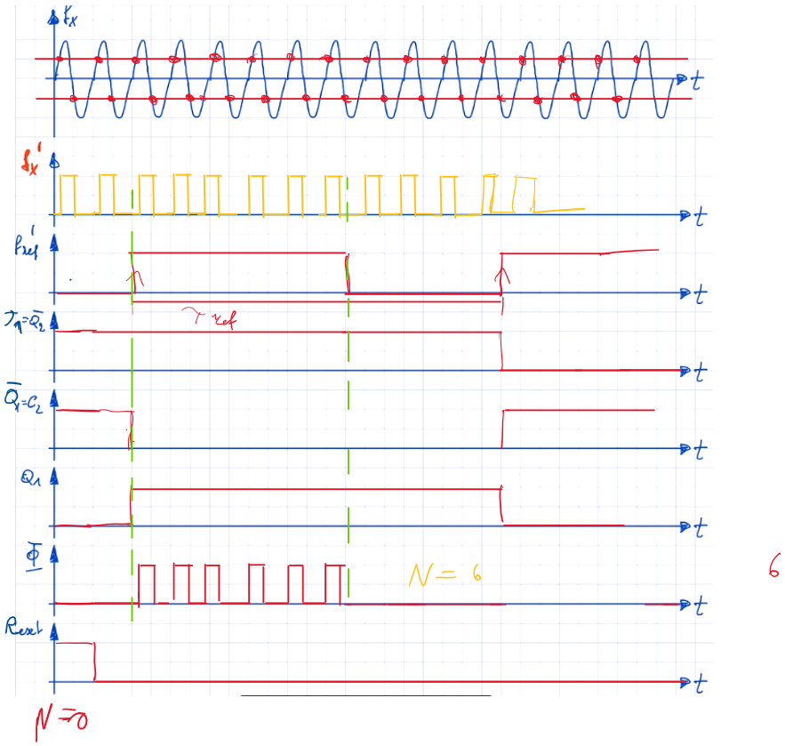
Berechnung der relevanten Größe#
\(N = f_x \cdot T_{ref}\)
\(f_x = \frac{T_{ref}}{N}\)
Digitale Periodendauermessung#
Schaltung#
Show code cell source
with schemdraw.Drawing() as d:
d += elm.Line().idot(open=True).label('$f_{ref}$')
d += elm.Ic(pins=[
elm.IcPin(side='left', anchorname='in1'),
elm.IcPin(side='right', anchorname='out')
], edgepadW=2).label('Vorteiler\n$N_{ref}$').anchor('in1').drop('out')
d += elm.Line().length(6)
d += (ACmp := lgc.And().anchor('in1').label('AND-Gate').drop('out'))
d += (counter := elm.Ic(pins=[
elm.IcPin(side='left', anchorname='in1'),
elm.IcPin(side='bottom', anchorname='out1'),
elm.IcPin(side='bottom', anchorname='out2')
], edgepadW=2).anchor('in1').label('n-Bit Counter', 'center').drop('out1'))
d.here = (0, -6)
d += elm.Line().idot(open=True).label('$f_x$')
d += elm.Ic(pins=[
elm.IcPin(side='left', anchorname='inp'),
elm.IcPin(side='right', anchorname='oup')
]).anchor('inp').drop('oup').label('Schmitt-Trigger', 'B').label('\u238e', 'center')
def t_ff():
return elm.Ic(pins=[
elm.IcPin('>', side='left'),
elm.IcPin('T', side='left'),
elm.IcPin('$\overline{Q}$', side='right', anchorname='nQ'),
elm.IcPin('Q', side='right'),
elm.IcPin(side='B', anchorname='res'),
])
d += (ff1 := t_ff().anchor('>').drop('nQ'))
d += elm.Line().right().length(2)
d += (ff2 := t_ff().anchor('>').drop('nQ'))
d += elm.Line().down().length(2)
d += elm.Wire('-|').to(ff1.T)
d += elm.Line().left().at(ff2.T).length(.5).dot(open=True).label('1')
d += elm.Wire('|-').at(ff1.Q).to(ACmp.in2)
d.here = (0, -10)
d += elm.Line().idot(open=True).label('Reset').length(2)
d.push()
d += elm.Wire('-|').to(ff1.res)
d.pop()
d.push()
d += elm.Wire('-|').to(ff2.res)
d.pop()
d.push()
d += elm.Wire('-|').to(counter.out1)
d += elm.Line(arrow='|->').at(counter.out2).down().label('n', 'bottom')
Spannungsdiagramme#
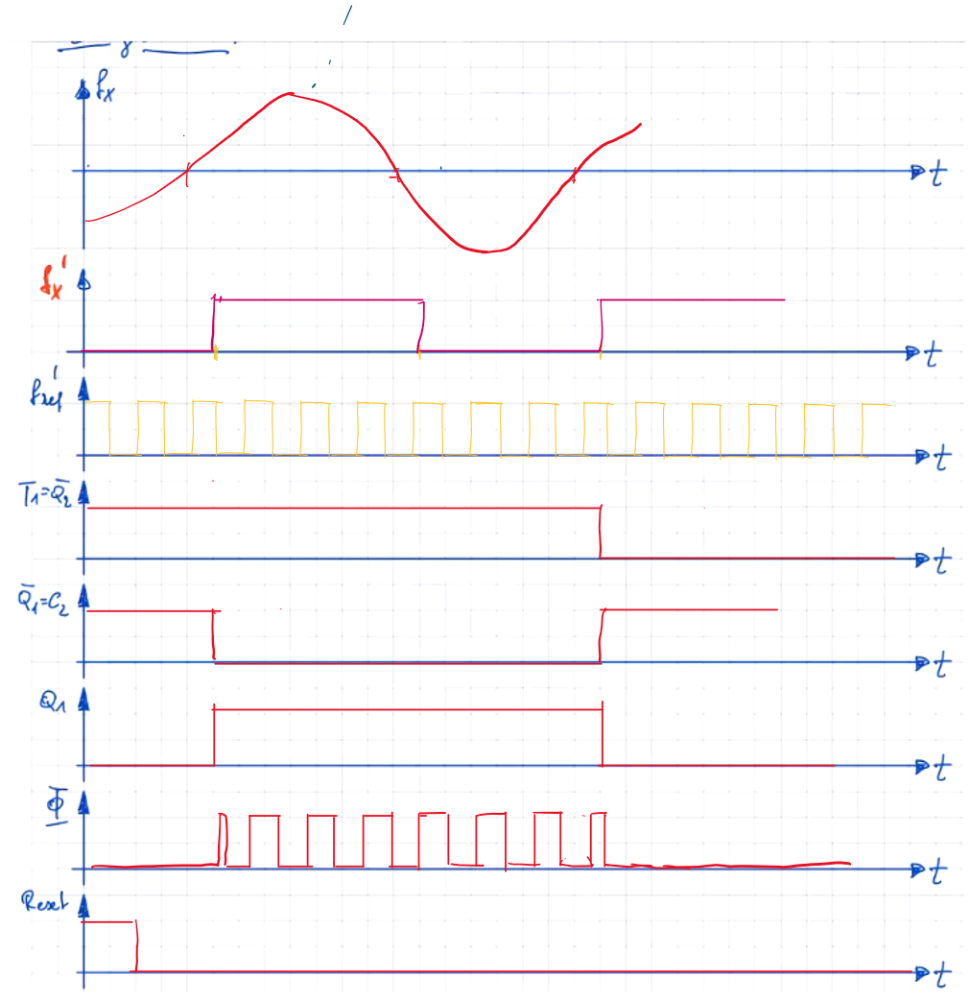
Berechnung der relevanten Größe#
\(N = T_x \cdot f_{ref}\)
\(T_x = \frac{f_{ref}}{N}\)
Digitale Phasenverschiebung-Messung#
Anforderungen:
\(f_1 = f_2 = const\)
Gleichanteil = 0 HP am Eingang
gleiche Signalform
Schaltung#
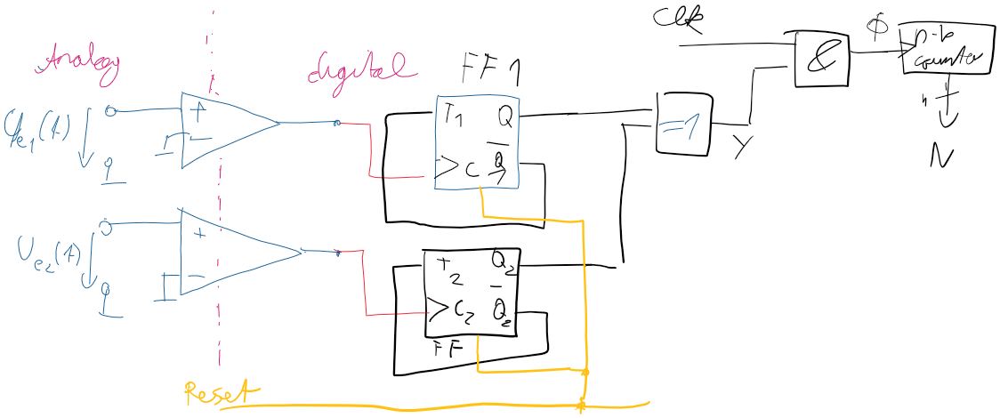
Spannungsdiagramme#
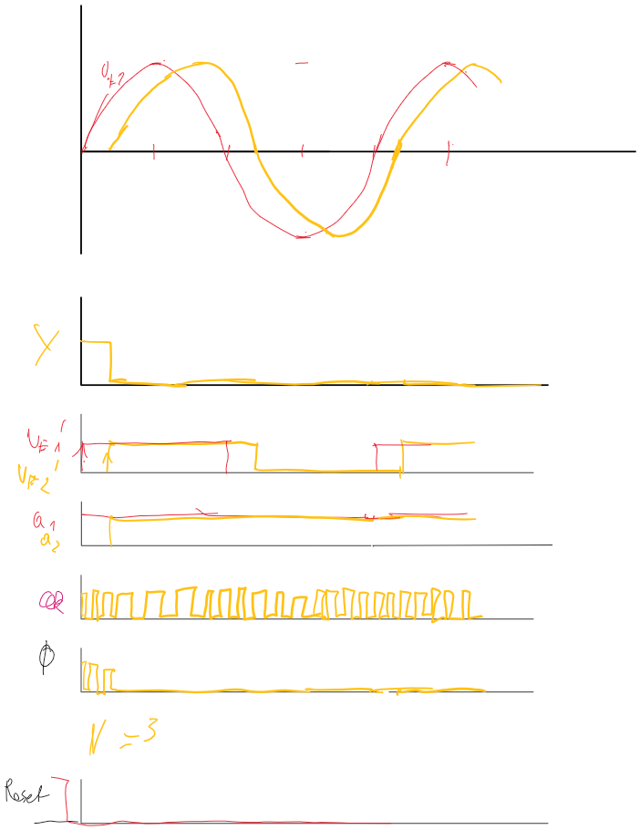
Berechnung der relevanten Größe#
\(N = f_{ref}\cdot \Delta t\Rightarrow \Delta t = \frac{N}{f_{ref}}\)
\(\varphi = \frac{\Delta t}{T}\cdot 360° = \frac{N}{f_{ref}\cdot T}\cdot 360°\)
U-f Umsetzer#
Schaltung#
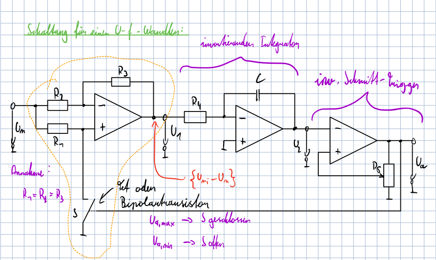
Spannungsdiagramme#
Show code cell source
WImage(filename=os.path.join(os.getcwd(), 'mtrs_media', 'uf_diags_real.pdf[0]'))
Berechnung der relevanten Größe#
\(f = \frac{1}{T} = \frac{1}{2t} = \frac{U_m}{4R_4 C \alpha U_{a, max}}\)
Anwendungsbeispiele#
DMS-Messbrücke#
Schaltungen#
Show code cell source
#WImage(filename=os.path.join(os.getcwd(), 'mtrs_media', 'dms_cir.pdf'))
WImage(filename="mtrs_media/dms_cir.pdf[0]")
OPV-Verstärkerschaltung#
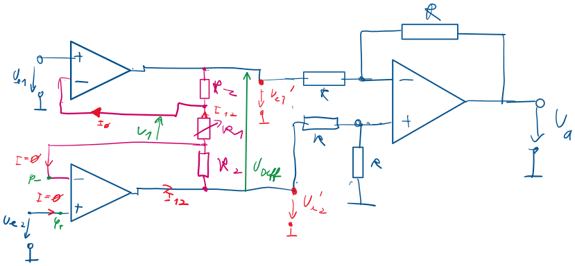
Berechnung/Herleitung der Ausgangsgröße#
\(U_{1} = U_B = U_{e2} - U_{e1} \wedge\)
\(I_{12} = \frac{U_1}{R_1} = \frac{U_{Diff}}{R_1 + 2R_2}\wedge\)
\(U_a = (U'_{e1} - U'_{e2}) \Rightarrow U_a = U_diff\)
\(\therefore U_a = \left(1 + \frac{2R_2}{R_1}\right)\cdot (U_{e2} - U_{e2})\)…Differenz der Potentiale zwischen 2 Punkten
Biasstromkompensation#
OPVs sind nicht ideal ( Eingangsströme ) beeinflussen die Verstärkung deshalb Kompensation durch extra Schaltung.
Signalaufbereitung#
Digitale Verarbeitungskette#
Anti Aliasing Filter#
Um zu verhindern, dass das Abtasttheorem verletzt wird, werden Anti-Aliasing Filter verwendet. Diese verhindern, dass die Signalfrequenz höher ist als die Maximal erlaubte
Show code cell source
with schemdraw.Drawing() as d:
d += elm.ResistorIEC().length(2).idot(open=True).dot()
d.push()
d += elm.Capacitor().down().length(1.5)
d += elm.Ground()
d.pop()
d += elm.Line().length(1).dot(open=True)
S&H Glied#
Für die AD-Umwandlung muss das Eingangssignal konstant Gehalten werden. Dafür werden Sample und Hold Glieder verwendet
Show code cell source
with schemdraw.Drawing() as d:
d += elm.Switch().idot(open=True)
d += elm.ResistorIEC().length(2).dot()
d.push()
d += elm.Capacitor().down().length(2)
d += elm.Ground()
d.pop()
d += elm.Line().length(1).dot(open=True)
Abtasttheorem#
Die Abtastfrequenz muss mindestens doppelt so hoch sein wie die Signalfrequenz.
Wenn das Abtasttheorem verletzt wird, so werden die hohen Frequenzanteile als niedrigere aufgefasst, welche das Signal verzerren
Umsetzungskennlinien#
AD-Wandler#
Sukzessive Approximationsverfahren#
Schaltung#
Show code cell source
SAR = elm.Ic(pins=[
elm.IcPin(side='top', anchorname='SH'),
elm.IcPin(name='Start', side='top'),
elm.IcPin(name='Reset', side='top'),
elm.IcPin(anchorname='in', side='left'),
elm.IcPin(name='Finished', side='right'),
elm.IcPin(anchorname='out', side='bottom')
],
edgepadW= .5,
pinspacing=1
).label('SAR', 'center')
#display(SAR)
Show code cell source
DA_conv = elm.Ic(
pins=[
elm.IcPin(side='left', name='in'),
elm.IcPin(side='right', name='out'),
elm.IcPin(side='top', anchorname='ref')
],
edgepadW = 2
).label('DA-Wandler', 'center')
#display(DA_conv)
Show code cell source
SH = elm.Ic(
pins=[
elm.IcPin(side='left', anchorname='in'),
elm.IcPin(side='right', anchorname='out'),
elm.IcPin(side='top', anchorname='trigger')
]
).label('S and H', 'center')
#display(SH)
Show code cell source
with schemdraw.Drawing() as d:
d += elm.Dot(open=True)
d += elm.Line()
d += SH.anchor('in').drop('out')
d += elm.Line().length(1)
d += (cmp := elm.Opamp().flip().anchor('in2'))
d += SAR.anchor('in')
d.here = SAR.out
d += elm.Line().down().length(1)
d.push()
d += elm.Line().left().length(1)
d += DA_conv.anchor('in')
d += elm.Line().at(DA_conv.out).left().length(1)
d.push()
d += (g1 := elm.Ground().at((d.here[0], d.here[1]-1)))
d.pop()
d.push()
d += (elm.Line(arrow='->').at((d.here[0]-.2, d.here[1]-.1)).to((d.here[0]-.2, g1.start[1]+.1))
.label('$U(Z)$'))
d.pop()
d += elm.Wire('|-').to(cmp.in1)
d.pop()
d += elm.Dot()
d += elm.Line(arrow='->').right().label('Z, of n lines')
d += elm.Wire('n').at(SAR.SH).to(SH.trigger)
d += elm.Line(arrow='->').at(SAR.Finished).right().length(.5)
d += elm.Line(arrow='<-').at(SAR.Start).up().length(.5)
d += elm.Line(arrow='<-').at(SAR.Reset).up().length(.5)
d += (ref := elm.SourceControlledV().reverse()
.at(DA_conv.ref).down())
d += elm.CurrentLabel().reverse().at(ref).label('$U_{ref}$')
d += elm.Ground()
Funktionsprinzip#
Die Bits des SAR (Sukkzessive *Approx Register) sind alle auf 0 Man hat einen Zeiger auf ein Bit, welches am Anfang auf das MSB zeigt.
Das Bit des Zeigers wird auf 1 gesetzt,
Über einen DA-Wandler wird der Ausgang wieder zu einer analogen Spannung gewandelt.
Wenn die Spannung nun größer als die Eingangsspannung ist, wird das Bit wieder auf 0 gesetzt Ansonsten bleibt es auf 1.
Wenn der Zeiger noch nicht das LSB erreicht hat, geht er um eine stelle zum nächsten weniger Werten Bit. Wenn der Zeiger das LSB erreicht hat, so ist die Wandlung beendet und das Finished-Flag wird auf 1 gesetzt
Laufzeit: \(O(log~n)\)
Diagramme#
Beispiel mit n=4 Bit und \(U_e = 10.7V\), der Wert des LSB Beträgt \(1V\) (MSB=> \(8V\))
Show code cell source
plt.figure(1)
plt.plot([-.1, 1], [10.7, 10.7])
plt.plot([-.1, 0,
0, 0.2,
0.2, .4,
.4, .6,
.6, .8,
.8, 1],
[0, 0,
8, 8,
12, 12,
10, 10,
11, 11,
10, 10])
plt.xlim([-.1, 1])
plt.ylim([0, 15])
plt.xticks([])
plt.show()
Herleitungen#
\(U(z) = U_{ref}\cdot\frac{t}{t_{max} +1}\cdot U_e\)
\(Z = \frac{Z_{max} + 1}{U_{ref}} \cdot U_e\)
Single Slope:#
Schaltung#
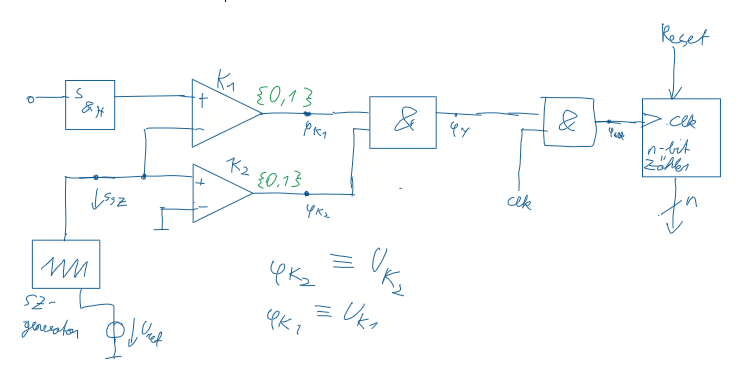
Bei uns S&H Glied am Eingang = kann bei uns ein & sein
Funktionsprinzip#
Es wird ein Sägezahn mit dem Eingang und mit Ground verglichen.
Wenn der Sägezahn größer 0 ist und kleiner als das Eingangssignals so ist das Und Gatter der Beiden Komparatoren HIGH. Durch ein UND Gatter mit einem Clock Signal, wird dieses nur in diesen Zeitraum durchgelassen.
Bei jeder durchgelassenen Clock-Flanke zählt ein Counter nach oben.
Diagramme#
Show code cell source
fig, (ax1, ax2, ax3, ax4) = plt.subplots(4, 1)
fig.set_size_inches(10, 10)
ax1.plot([-.2, 0, 1, 1, 1.1], [-1, -1, 10, -.5, -.5])
ax1.plot([-.2, 1.1], [2, 2])
ax1.plot([-.2, 1.1], [0, 0], color='black')
ax1.set_yticklabels([])
ax2.plot([-.2, .3, .3, 1, 1, 1.1], [1, 1, 0, 0, 1, 1])
ax2.set_ylabel('$U_{k1}$')
ax3.plot([-.2,.1 ,.1, 1.1], [0, 0, 1, 1])
ax3.set_ylabel('$U_{k2}$')
ax4.plot([-.2, .1, .1, .3, .3, 1.1], [0, 0, 1, 1, 0, 0])
ax4.set_ylabel('$U_y$')
Text(0, 0.5, '$U_y$')
Herleitungen#
\(N = \Delta t \cdot f_{clk}\)
Dual Slope:#
Schaltung#
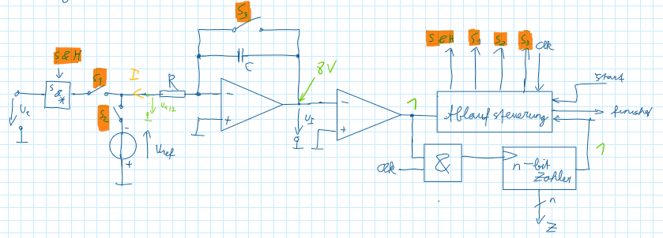
Funktionsprinzip#
Es wird nach der Eingangsspannung invers für die Zeit \(t_1\) Integriert
Danach wird nach einer Referenzspannung nach oben integriert (\(-\)&\(-\) \(\Rightarrow~~+\))
Während des 2. Integrierens zählt ein Counter nach oben, dieser Vorgang wird abgebrochen, wenn der Integrierte Wert \(~0\) erreicht (Komparator)
WICHTIG: \(t_1\) ist konstant
Da die Flächen gleich sind, fallen die \(RC\) Komponenten weg, wodurch man nicht von Bauteildriften betroffen ist.
Diagramme#
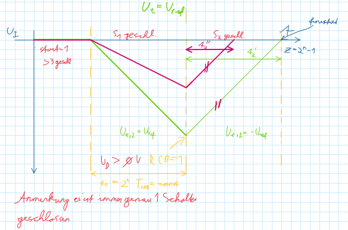
Herleitungen#
Die Fläche unter beiden Analogwerten ist gleich.
\(-\frac{1}{RC} \int_0^{t_1} U_e dt = -\frac{1}{RC} \int_{t_1}^{t_2 + t_1} U_{ref}dt\)
\(U_e\cdot t_1 = U_{ref}\cdot t_1 + U_{ref}\cdot t_2 - U_{ref}\cdot t_1\)
\(U_e\cdot t_1 = U_{ref} \cdot t_2\)
\(t_1 = 2^n\cdot T_{clk} \wedge t_2 \cdot Z\cdot T_{clk}\)
\(U_e \cdot 2^n \cdot T_{clk} = U_{ref}\cdot Z \cdot T_{clk}\)
\(Z = \frac{U_e}{U_{ref}} \cdot (Z_{max} + 1)\)
Zählverfahren#
Schaltung#
Show code cell source
DA_conv = elm.Ic(
pins=[
elm.IcPin(side='left', name='in'),
elm.IcPin(side='right', name='out'),
elm.IcPin(side='top', anchorname='ref')
],
edgepadW = 2
).label('DA-Wandler', 'center')
Show code cell source
SH = elm.Ic(
pins=[
elm.IcPin(side='left', anchorname='in'),
elm.IcPin(side='right', anchorname='out'),
]
).label('S and H', 'center')
Show code cell source
counter = elm.Ic(
pins=[
elm.IcPin(side='left', anchorname='in'),
elm.IcPin(side='bottom', anchorname='out'),
elm.IcPin(name='clk<', side='right', anchorname='clk'),
elm.IcPin(name='reset', side='top')
], edgepadW=2.25
).label('n-bit counter', 'center')
#display(counter)
Show code cell source
with schemdraw.Drawing() as d:
d += elm.Dot(open=True)
d += elm.Line()
d += SH.anchor('in').drop('out')
d += elm.Line().length(1)
d += (cmp := elm.Opamp().anchor('in2').flip())
d += elm.Line().length(1)
d += counter.anchor('in')
d += elm.Line().at(counter.out).down().length(2)
d.push()
d += elm.Line().left().length(1)
d += DA_conv.anchor('in').drop('out')
d += elm.Line().left()
d.push()
d += (g1 := elm.Ground().at((d.here[0], d.here[1]-1)))
d.pop()
d.push()
d += (elm.Line(arrow='->').at((d.here[0]-.2, d.here[1]-.1)).to((d.here[0]-.2, g1.start[1]+.1))
.label('$U(Z)$'))
d.pop()
d += elm.Wire('|-').to(cmp.in1)
d += (ref := elm.SourceControlledV().reverse()
.at(DA_conv.ref).down().length(2))
d += elm.CurrentLabel().reverse().at(ref).label('$U_{ref}$')
d += elm.Ground()
d.pop()
d += elm.Dot()
d += elm.Line(arrow='->').right().label('Z')
Funktionsprinzip#
Solange der DA gewandelte wert von Z kleiner als U_e ist (Komparator gibt \(0\) aus), zählt der Counter nach oben. Wenn der Wert größer als U_e ist (Komparator gibt \(0\) aus). so zählt der Counter nach unten. Laufzeit: \(O(2^n)\)
Wenn sich der Eingang um weniger als \(U_{LSB}\cdot f_{clk} \equiv \frac{[V]}{[s]}\) ändert, so kann das S&H Glied weggelassen werden. Dadurch folgt der Ausgangswert dem Eingangswert.
Diagramme#
Show code cell source
fig, ax = plt.subplots(1,1)
ax.plot([-.1, 1.2], [8.7, 8.7])
ax.plot([
-.1, .1,
.1, .2,
.2, .3,
.3, .4,
.4, .5,
.5, .6,
.6, .7,
.7, .8,
.8, .9,
.9, 1,
1, 1.1,
1.1, 1.2
],[
0, 0,
1, 1,
2, 2,
3, 3,
4, 4,
5, 5,
6, 6,
7, 7,
8, 8,
9, 9,
8, 8,
9, 9
])
[<matplotlib.lines.Line2D at 0x1f3c25b3190>]
DA-Wandler#
R2R-Netzwerk#
Show code cell source
with schemdraw.Drawing() as d:
d.push()
d += (ref := elm.SourceControlledV().down())
d += elm.CurrentLabel().reverse().at(ref).label('$R_{ref}$')
d += elm.Ground()
d.pop()
zs = []
N = 4
for i in range(N-1, -1, -1):
d += elm.Line().dot().length(2)
d.push()
nr = 2**(N-i)
d += elm.ResistorIEC().down().label(f'${nr}R$')
d += (z := elm.SwitchSpdt2().down().label(f'$Z_{i}$'))
zs.append(z)
d.pop()
prev = None
for z in zs:
d += elm.Line().at(z.b).down().dot().length(1)
if not prev:
d.push()
prev = d.here
continue
d += elm.Line().to(prev)
prev = d.here
d.pop()
d += elm.Line().left().length(2)
d += elm.Line().down().length(.5)
d += elm.Ground()
zs.reverse()
prev = None
for z in zs:
d += elm.Line().at(z.c).down().dot().length(2)
if not prev:
prev = d.here
continue
d += elm.Line().to(prev)
prev = d.here
d += elm.Line().length(1.5).dot()
loop = d.here
d += elm.Line().length(.5)
d += (amp := elm.Opamp().anchor('in1'))
d += elm.Line().length(.5).dot()
d.push()
d += elm.Line().up().length(2)
d += elm.ResistorIEC().left().label('$R_F$')
d += elm.Wire('-|').to(loop)
d.pop()
d += elm.Line().length(1)
d += elm.Dot(open=True)
d += elm.Gap().down().label(('+', '$U_a$','-')).length(2)
d += elm.Dot(open=True)
d += elm.Ground()
Prinzip der gewichteten Ströme#
Nach Überlagerungs-Prinzip Summe von jeden einzelnen Pfad.
\(U_a = -U_{ref}\cdot \left(Z_3\cdot\frac{R_F}{2R} + Z_2\cdot\frac{R_F}{4R} + Z_1\cdot\frac{R_F}{8R} + Z_0\cdot\frac{R_F}{16R}\right)\)
\(U_a = -U_{ref} \cdot \frac{R_F}{16R}\cdot (8\cdot Z_3 + 4\cdot Z_2 + 2 \cdot Z_1 + Z_0)\)
In dieser Form gut einsehbar, jeder Schalter repräsentiert ein Bit.
\(\forall Z_i \in \{0, 1\}\)
\(U_a = -U_{ref} \cdot\frac{R_F}{16R}\cdot Z = -U_{ref}\cdot\frac{R_F}{R}\cdot \frac{Z}{Z_{max} +1}\)
Strom ist unabhängig von Z.
\(I' = U_{ref} \cdot \frac{Z}{Z_{max} + 1}\cdot \frac{1}{R}\)
\(I'' = \frac{U_{ref}}{R}\cdot \frac{Z_{max} - Z}{Z_{max} + 1}\)
\(I = I' + I''\)
nicht von \(Z\) abhängig
Inverses R2R-Netzwerk#
Show code cell source
with schemdraw.Drawing() as d:
d.push()
d += elm.ResistorIEC().down().length(2).label('$2R$')
d += elm.Ground()
d.pop()
zs = []
N = 4
for i in range(N):
if not (i == 0):
d += elm.ResistorIEC().dot().length(2).label('R')
else:
d += elm.Line().dot().length(2)
d.push()
d += elm.ResistorIEC().down().label(f'$2R$')
d += (z := elm.SwitchSpdt2().down().label(f'$Z_{i}$'))
zs.append(z)
d.pop()
d.push()
prev = None
for z in zs:
d += elm.Line().at(z.b).down().dot().length(1)
if not prev:
d.push()
prev = d.here
continue
d += elm.Line().to(prev)
prev = d.here
d.pop()
d += elm.Line().left().length(2)
d += (ref := elm.SourceControlledV().down().length(2))
d += elm.CurrentLabel().at(ref).reverse().label('$U_{ref}$')
d += elm.Ground()
prev = None
for z in zs:
d += elm.Line().at(z.c).down().dot().length(2)
if not prev:
d.push()
prev = d.here
continue
d += elm.Line().to(prev)
prev = d.here
d.pop()
d += elm.Ground()
d.pop()
d += elm.Line().length(2).dot()
d.push()
d += elm.ResistorIEC().down().label('$2R$')
d += elm.Ground()
d.pop()
d += elm.Line().length(1.5)
d += (amp := elm.Opamp().anchor('in2').flip())
d += elm.Line().at(amp.out).length(1).dot()
d.push()
d += elm.ResistorIEC().down().length(2.5).dot().label('$R_2$')
d.push()
d += elm.Line().left().length(4)
d += elm.Wire('|-').to(amp.in1)
d.pop()
d += elm.ResistorIEC().down().length(2.5).label('$R_1$')
d += elm.Ground()
d.pop()
d += elm.Line().length(1)
d += elm.Gap().down().label(('+', '$U_a$', '-')).dot(open=True).idot(open=True)
d += elm.Ground()
Bei Überlagerung alle Werte bis zum Schalter kollabieren zu 2R
Durch Teilung danach,
\(\varphi_+ = Z_3 \cdot \frac{U_{ref}}{3} + Z_2 \cdot \frac{U_{ref}}{6} + Z_1 \cdot \frac{U_{ref}}{12} + Z_0 \cdot \frac{U_{ref}}{24}\)
\(\varphi_+ = \frac{U_{ref}}{24} \cdot (8 \cdot Z_3 + 4 \cdot Z_2 + 2 \cdot Z_1 + Z_0)\)
\(\varphi_+ = \frac{U_{ref}}{24}\cdot Z = \frac{16}{16}\cdot \frac{U_{ref}}{24}\cdot Z\)
\(U_a = \frac{U_{ref}}{3}\cdot \frac{Z}{Z_{max}} \cdot \left(1 + \frac{R_2}{R_1} \right)\)
Industrielle Anwendung#
Bustopologie und Zugriffsverfahren#
Bustopologievarianten#
Stern
Ring
Peer-To-Peer
Bus
Baum
Master-Slave-Prinzip#
In einem Netzwerk gibt es einen oder mehrere Teilnehmer (Master), welche die anderen Teilnehmer ansprechen und den Datenaustausch steuern.
CSMA/CD#
Hier wird ein Störsignal ausgesendet sobald eine Kollision entdeckt wurde. Alle Teilnehmer stoppen zu senden und berechnen sich Zufallszahlen, welche bestimmen wie lange sie warten bis sie wieder versuchen die Nachricht zu versenden.
Deshalb ist diese Art nicht Deterministisch!
CSMA/CA#
Hier bekommt jeder Teilnehmer eine Adresse, je nach der Wertigkeit diese Adresse wird bestimmt wer senden darf. Denn sobald ein Teilnehmer auf diese Leitung überschrieben wird, so schaltet sich dieser weg.
Show code cell source
fig, axs = plt.subplots(4, 1)
for ax in axs:
ax.set_yticks([1, 0])
ax.set_xticks([])
ax.set_ylim([-.1, 1.1])
ax.set_xlim([-0.1, 4])
(ax1, ax2, ax3, ax4) = axs
# 1, 1,#0, 0,
# 1, 0, 1,#1
# 1, 0, 0, 1
ax1.plot(
[0, 0, 1, 1, 2, 2, 3, 3, 4],
[0, 1, 1, 1, 1, 0, 0, 0, 0]
)
ax1.plot(
[0, 0, 1, 1, 2, 2, 3, 3, 4],
[0, 1, 1, 1, 1, 1, 1, 1, 1]
)
ax1.text(1.2, .5, 'schaltet sich \n weg')
ax2.plot(
[0, 0, 1, 1, 2, 2, 3, 3, 4],
[0, 1, 1, 0, 0, 1, 1, 0, 0]
)
ax2.plot(
[0, 0, 1, 1, 2, 2, 3, 3, 4],
[0, 1, 1, 0, 0, 1, 1, 1, 1]
)
ax2.text(2.2, .5, 'schaltet sich \nweg')
ax3.plot(
[0, 0, 1, 1, 2, 2, 3, 3, 4],
[0, 1, 1, 0, 0, 0, 0, 1, 1,]
)
ax4.plot(
[0, 0, 1, 1, 2, 2, 3, 3, 4],
[0, 1, 1, 0, 0, 0, 0, 1, 1]
)
ax4.text(4.22, .5, 'Master 3 \nGewinnt Arbitrierung')
;
''
Wired-AND#
Die Ausgänge sind Open-Collectors und die Leitung wird auf HIGH gezogen. Sobald nun mindestens ein Teilnehmer die Leitung auf LOW ziehen möchte geht die Leitung auf LOW.
Somit müssen alle Teilnehmer HIGH schreiben wollen damit auch HIGH auf die Leitung geschrieben wird, Diese Eigenschaft führt dazu, dass wenn ein Teilnehmer überschrieben wird, sich dieser wegschaltet und somit CSMA-CA ermöglicht.
Serielle Schnittstelle#
RS232#
Eigenschaften#
Ruhepegel: HIGH
RS232
UART
LOW
\(~+3~...~+15V\)
\(0V\)
HIGH
\(-3~...~-15V\)
\(5V\)
5-8 Datenbits
LSB als erstes
MSB als letztes0-1 Paritätsbit
EVEN oder ODD1, 1.5, 2 Stop Bits Ruhephase bis zur nächsten Datenübertragung
Baudrate = \(Bit/s\)
bei RS232 vielfaches von \(150\)
Störeinflüsse#
Gleichtaktstörung#
Bei kapazitiver Störung wird das Potential verändert Bei differentialer Datenübertragung werden beide Leitungen beinahe gleich gestört und die Potentialdifferenz bleibt nahezu gleich
Induktive Störung#
Durch Leitungsschleifen treten induktive Störungen auf. Wenn die Leitung verdrillt wird (twisted pair), so gibt es mehrere kleinere Felder, welche ein gegengleiches Vorzeichen und somit die induktive Störung minimal halten.
Differenzielle Datenübertragung#
Es wird nicht das Potenzial der Leitung gemessen,
sondern die Potentialunterschied zwischen zwei Leitungen.
Am Empfänger wird das Signal dekodiert (Optokoppler)
MAX-232-Ladungspumpenprinzip#
Ladungspumpe#
Show code cell source
with schemdraw.Drawing() as d:
d += elm.Diode().idot(open=True).dot()
d.push()
d += elm.Capacitor().down().dot()
d.push()
d += lgc.Not().reverse().left().dot(open=True)
d.pop()
d += lgc.Not().right()
d += elm.Capacitor().up().dot()
d.pop()
d += elm.Diode().right()
d += elm.Diode().dot(open=True)
Show code cell source
with schemdraw.Drawing() as d:
d += elm.Diode().idot(open=True).dot().label('$5V$', 'L')
d.push()
d += elm.Capacitor().down().dot().label(('+', '$5V$', '-')).label('$0V$', 'L')
d.push()
d += lgc.Not().reverse().left().dot(open=True).label('$5V$', 'L')
d.pop()
d += lgc.Not().right().label('$5V$', 'R')
d += elm.Capacitor().up().dot().label(('-', '$0V$', '+')).label('$5V$', 'R')
d.pop()
d += elm.Diode().right()
d += elm.Diode().dot(open=True)
d += elm.Capacitor().down().label(('+', '$5V$', '-'))
d += elm.Ground()
with schemdraw.Drawing() as d:
d += elm.Diode().idot(open=True).dot().label('$5V$', 'L')
d.push()
d += (elm.Capacitor()
.down()
.dot()
.label(('+', '$5V$', '-'))
.label('$\\uparrow 5V$', 'L')
.label('$\\uparrow 10V$', 'R')
)
d.push()
d += lgc.Not().reverse().left().dot(open=True).label('$0V$', 'L')
d.pop()
d += lgc.Not().right().label('$0V$', 'R')
d += elm.Capacitor().up().dot().label(('-', '$10V$', '+')).label('$10V$', 'R')
d.pop()
d += elm.Diode().right()
d += elm.Diode().dot(open=True)
d += elm.Capacitor().down().label(('+', '$10V$', '-'))
d += elm.Ground()
with schemdraw.Drawing() as d:
d += elm.Diode().idot(open=True).dot().label('$5V$', 'L')
d.push()
d += elm.Capacitor().down().dot().label(('+', '$5V$', '-')).label('$0V$', 'L').label('$5V$', 'R')
d.push()
d += lgc.Not().reverse().left().dot(open=True).label('$5V$', 'L')
d.pop()
d += lgc.Not().right().label('$\\uparrow 5 V$', 'R')
d += elm.Capacitor().up().dot().label(('-', '$10V$', '+')).label('$\\uparrow 15V$', 'R')
d.pop()
d += elm.Diode().right()
d += elm.Diode().dot(open=True)
d += elm.Capacitor().down().label(('+', '$15V$', '-'))
d += elm.Ground()
Spannunginvertierer#
Show code cell source
with schemdraw.Drawing() as d:
start = d.here
d += elm.Line().length(1).idot(open=True)
d += (sw := elm.SwitchSpdt2().reverse().anchor('b').drop('a'))
d += elm.Capacitor().dot()
d.push()
d += elm.Diode().reverse().length(2)
d.push()
d += elm.Line().length(1).dot(open=True)
uap = d.here
d.pop()
d += elm.Capacitor().down()
tmp = d.here
d.pop()
d += elm.Diode().down().dot()
d.push()
d += elm.Wire('-').to(tmp).dot()
d += elm.Line().right().length(1).dot(open=True)
d += elm.Gap().reverse().to(uap).label(('-', '$U_a$','+'))
d.pop()
d += elm.Line().tox(sw.c[0]).dot()
d.push()
d += elm.Line().to(sw.c)
d.pop()
d += elm.Line().length(1).left().dot(open=True)
d += elm.Gap().to(start).label(('-', '$U_e$', '+'))
Show code cell source
with schemdraw.Drawing() as d:
start = d.here
d += elm.Line().length(1).idot(open=True).label('$+5$', 'L')
d += (sw := elm.SwitchSpdt2().reverse().anchor('b').drop('a'))
d += elm.Capacitor().dot().label(('+', '$5V$', '-'))
d.push()
d += elm.Diode().reverse().length(2)
d.push()
d += elm.Line().length(1).dot(open=True)
uap = d.here
d.pop()
d += elm.Capacitor().down().label(('+', '$0V$', '-'))
tmp = d.here
d.pop()
d += elm.Diode().down().dot()
d.push()
d += elm.Wire('-').to(tmp).dot()
d += elm.Line().right().length(1).dot(open=True)
d += elm.Gap().reverse().to(uap).label(('-', '$U_a$','+'))
d.pop()
d += elm.Line().tox(sw.c[0]).dot()
d.push()
d += elm.Line().to(sw.c)
d.pop()
d += elm.Line().length(1).left().dot(open=True)
d += elm.Gap().to(start).label(('-', '$U_e$', '+'))
with schemdraw.Drawing() as d:
start = d.here
d += elm.Line().length(1).idot(open=False).label('$+5$', 'L')
d += (sw := elm.SwitchSpdt2().reverse().anchor('c').drop('a').flip())
d += elm.Capacitor().dot().label(('+', '$5V$', '-'))
d.push()
d += elm.Diode().reverse().length(2)
d.push()
d += elm.Line().length(1).dot(open=True)
uap = d.here
d.pop()
d += elm.Capacitor().down().label(('-', '$5V$', '+'))
tmp = d.here
d.pop()
d += elm.Diode().down().dot()
d.push()
d += elm.Wire('-').to(tmp).dot()
d += elm.Line().right().length(1).dot(open=True)
d += elm.Gap().reverse().to(uap).label(('-', '$U_a$','+'))
d.pop()
d += elm.Line().tox(sw.c[0]).dot()
d.push()
d += elm.Line().to(sw.b)
d.pop()
d += elm.Line().length(1).left().dot(open=True)
d += elm.Gap().to(start).label(('-', '$U_e$', '+'))
with schemdraw.Drawing() as d:
start = d.here
d += elm.Line().length(1).idot(open=True).label('$+5$', 'L')
d += (sw := elm.SwitchSpdt2().reverse().anchor('b').drop('a'))
d += elm.Capacitor().dot().label(('+', '$5V$', '-'))
d.push()
d += elm.Diode().reverse().length(2)
d.push()
d += elm.Line().length(1).dot(open=True)
uap = d.here
d.pop()
d += elm.Capacitor().down().label(('+', '$-5V$', '-'))
tmp = d.here
d.pop()
d += elm.Diode().down().dot()
d.push()
d += elm.Wire('-').to(tmp).dot()
d += elm.Line().right().length(1).dot(open=True)
d += elm.Gap().reverse().to(uap).label(('-', '$U_a$','+'))
d.pop()
d += elm.Line().tox(sw.c[0]).dot()
d.push()
d += elm.Line().to(sw.c)
d.pop()
d += elm.Line().length(1).left().dot(open=True)
d += elm.Gap().to(start).label(('-', '$U_e$', '+'))
Datensicherungsverfahren#
Paritätsbit#
Es wird die Anzahl der Einsen gezählt,
anschließend wird aufgrund der Anzahl bestimmt welchen Wert das Paritätsbit haben soll.
Das Paritätsbit wird XOR gebildet
XOR können nacheinander gerechnet werden.
EVEN Mit dem Paritätsbit ist die Anzahl der Einen Gerade
\(\quad\left(b_0 \oplus b_1 \oplus b_2 \oplus ...\oplus b_n\right)\)ODD Mit dem Paritätsbit ist die Anzahl der Einsen Ungerade
\(\neg\left(b_0 \oplus b_1 \oplus b_2 \oplus ...\oplus b_n\right)\)
Zur Kontrolle wird beim Empfänger wieder die Parität gebildet und anschließend mit dem gesendeten Paritätsbit XOR gerechnet. Wenn dabei \(0\) rauskommt ist die Nachricht OK (sofern max 1 Bit-Fehler auftreten können) und wenn \(1\) rauskommt ist die Nachricht sicher Falsch
Das Paritätsbit hat eine Hamming Distanz von \(1\)
Hamming-Distanz#
Die Hamming Distanz gibt an wie viele Bit-Flips mindestens auftreten müssen, um zum nächsten gültigen Wert zu kommen.
max. detektierbare Fehler Anzahl:
\(k = h-1\)max. korrigierbare Fehler Anzahl:
\(t = \text{floor}\left(\frac{d_{min} - 1}{2}\right)\)
CRC (Cycle Redundancy Check)#
Grundprinzip#
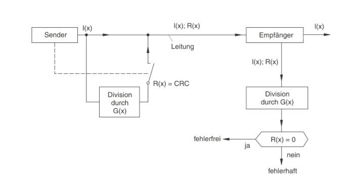
Generatorpolynom#
\(I(x)\)…Nutzdaten
\(G(x)\)…Generatorpolynom
\(R(x)\)…Divisionsrestes
Generatorpolynom gibt eine Bitfolge an,
alle vorhandenen Potenzen geben eine 1 in der Bitfolge an
Das MSB muss immer 1 sein.
Das Generatorpolynom hat die Höchste Potenz + 1 stellen.
Bsp.
\(G(x) = x^5 + x^4 + x^2 + 1\)
\(G(x) = 110101\)
Berechnungsschema:
\(I(x)\qquad r-1~\text{Nullen}\quad:\quad G(x)\)
Rechnenprinzip#
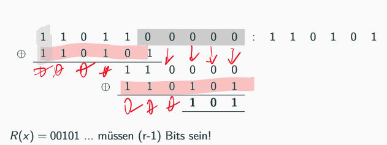
Fehlererkennung#
Zur Kontrolle muss die CRC-Checksum erneut berechnet werden, mit der gesendeten Checksumme als Teil der Übertragung
Wenn die Übertragung korrekt und ohne Fehler war, ist der Wert welcher zurück gesendet wird 0
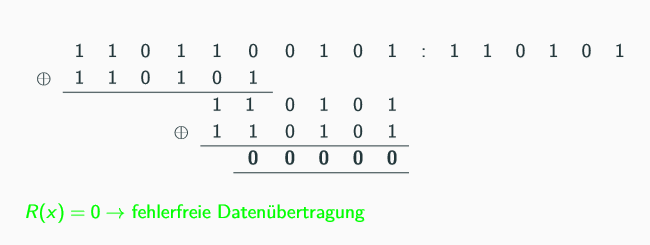
Schaltung#
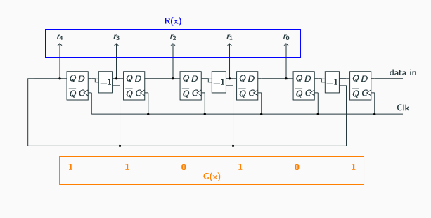
I2C#
Spezifikation#
Es gibt zwei Leitungen SDA (Datenleitung) und SCL (Clockleitung),
welche auf HIGH gezogen werden.
Dadurch ist die Leitung auf 0,
sobald mindestens ein Teilnehmer die Leitung auf 0 zieht.
Jeder Teilnehmer besitzt eine einzigartige Adresse,
je nach Aufgabe kann dieser nur Senden (Tastatur),
nur Empfangen (LC-interface) oder beides(Speicherbaustein)
Der Master muss beim Senden die Arbitrierung “gewinnen”,
in der Arbitrierungsphase wird die Empfänger Adresse ausgeschrieben.
Der Teilnehmer der die niederwertigste Adresse ansprechen will gewinnt die Arbitrierung.
Nur weil jeder Teilnehmer Master und Slave sein könnte,
muss dies nicht sein.
Wenn sich ein Bit-Level ändert muss die SCL-Leitung auf Low sein Ferner wenn ein Teilnehmer länger braucht um etwas zu verarbeiten kann dieser die SCL Leitung auf LOW ziehen und somit mit der Übertragung fortfahren wenn der Teilnehmer bereit ist.
Start- und Stopp-Bedingungen werden durch Änderung des SDA Pegel bei HIGH Pegel auf der SCL Leitung gesendet (Verletzung des nicht Veränderns der SDA-Leitung)
Adressierung#
Jeder Teilnehmer, welcher angesprochen werden soll, hat eine eindeutige Slave Adresse, welche ausgesendet wird, wenn jemand diesen Baustein ansprechen will. Master-Only Bausteine brauchen keine Adresse.
Die Adresse ist normalerweise 7-Bit, kann aber auf 10-Bit erweitert werden (meist 7-Bit).
Diese Adresse wird bei der Arbitrierung ausgesendet,
Zusätzlich zur Adresse wird noch ein Read Flag ausgesendet \(R/\overline{W}\),
welche indiziert ob der aus dem Baustein gelesen oder geschrieben werden soll.
Show code cell source
lgc.TimingDiagram(
{'signal': [
{'name': 'Arbitrierung', 'wave': '53......4', 'data': ['Start', 'Adresse', '$R/\\overline{W}$']}
]
})
Wired-AND#
Durch Wired-AND wird, sobald ein Teilnehmer LOW senden möchte, die Leitung auf LOW gehen und alle anderen Teilnehmer überschreibt. Dies ermöglicht die Arbitrierung und das ein Teilnehmer die Clock Leitung auf LOW ziehen kann wenn dieser mehr Zeit braucht.
Datanübertragunsrahmen#
Show code cell source
lgc.TimingDiagram(
{'signal': [
{'name': 'Write: R=0',
'wave': '53......467...67...68',
'data': ['S', 'Slave Adresse', '$R/\\overline{W}$', 'A', 'Daten', 'A', ' Daten', '$A/\\overline{A}$', 'P']
},
{'name': 'Read: R=1',
'wave': '53......467...67...68',
'data': ['S', 'Slave Adresse', '$R/\\overline{W}$', 'A', 'Daten', 'A', ' Daten', '$\\overline{A}$', 'P']
}
]}
)
\(A\)…Acknowledge SDA-LOW
\(\overline{A}\)…not Acknowledge-HIGH
\(S\)…Start Bedingung
\(P\)…Stopp Bedingung
Ablauf Datensenden und Datenempfang#
Beim Start wird bei SCL HIGH SDA auf LOW gezogen.
Zuerst findet die Arbitrierung statt, jeder Master der Senden möchte Sendet die Slave-Adresse
Datensendung MSB zu LSB (Big-Endian)
Ein Block an Daten ist immer 8-Bit (1-Byte),
die Anzahl an Bytes ist Theoretisch unbegrenzt,
es kann sein das die Bausteine eine begrenzte Anzahl an Bytes senden/empfangen können.
Am Ende wird die Übertragung mit einem Acknowledge abgeschlossen. Dieses gibt an ob der Teilnehmer die Übertragung weiterführen oder abbrechen will.
\(\text{ACK} = 0\Rightarrow \text{Senden weiterführen}\)
\(\text{ACK} = 1\Rightarrow \text{Senden abbrechen}\)
Es liefert immer der Teilnehmer das ACK-Bit, welche die Daten Empfängt (Master wenn Slave sendet, Slave wenn Master sendet)
Am Ende kommt die Stopp Bedingung,
wo bei HIGH SCL SDA auf HIGH gebracht wird.
Alternativ kann der Master die Repeated Start Bedingung senden,
womit er wieder die Slave Adresse aussendet und
Show code cell source
lgc.TimingDiagram(
{'signal': [
{'name': 'Sample RS',
'wave': '53..467..693..467..68',
'data': ['S', 'Slave Adresse', '$R/\\overline{W}$', 'A', 'Daten', '$A/\\overline{A}$',
'RS' ,'Slave Adresse', '$R/\\overline{W}$','A', 'Daten', '$\\overline{A}$','P']
},
]}
)
\(RS\)…Repated Start
Busarbitrierung#
Jeder sendet die Slave Adresse aus,
zu die er senden möchte.
Der jedes Mal wenn ein Teilnehmer überschrieben wird,
schaltet sich dieser Teilnehmer weg
und sendet den rezessiven Zustand (HIGH)
Show code cell source
# 1 1 0 0 1 0 1
# 1 1 1 0 1 0 0
# 1 1 0 1 0 0 0
lgc.TimingDiagram({'signal': [
{'name': 'T1', 'wave': '1100101'},
{'name': 'T2', 'wave': '1110100',},
{'name': 'T3', 'wave': '1101000',},
{'name': 'Bus', 'wave': '1100101'}
]})
T2 Schaltet sich beim 3. Bit weg
T3 Schaltet sich beim 4. Bit weg
Can#
Spezifikation#
Controller Area Network
Merkmale
Asynchron und Seriell
HW Realisierung
Ziel: Kabelbäume in Autos Reduzieren
Netzwerk
CAN-Knoten
Linien-/Sterntopologie
verdrillte ungeschirmte Zweidrahtleitung
symmetrische Signalübertragung
Datenrate: max 1MBit/s bei 40m
\(120\Omega\) Terminierung
32 Teilnehmer pro Busstrang mehrere durch Repeater
Bestandteile eines CAN-Knotens
Host
Übergeordneter HostCAN Controller
einheitliche Abwicklung des CAN ProtokollsCAN Transceiver
Ankopplung CAN-Controller an CAN-Bus
Differenzialübertragung
High- und Low-Speed Übertragung
Highspeed
\(40\text{kBit/s}\)…\(1\text{MBit/s}\)HIGH: rezessiv, \(2.5V\) auf beiden Leitungen
LOW: dominant, CAN\(_{high} = 3.5V\) CAN\(_{low} = 1.5V\) \(U_{diff} = 2V\)
Lowspeed
\(5\text{kBit/s}\)…\(125\text{kBit/s}\)
CAN bleibt nur mit einer Plus Leitung funktionsfähigHIGH: rezessiv, CAN\(_{high} = 0V\) CAN\(_{low} = 5V\) $U_{diff} = 5V
LOW: dominant, CAN\(_{high} = 3.6V\) CAN\(_{low} = 1.6V\) \(U_{diff} = 2V\)
Dominanter und rezessiver Pegel
Data Frames nicht von Zeit sonder vom Auftreten spezieller Ereignisse
Nachrichtenlänge max 130 Bit
kein Zeitplan, Nachrichten werden versendet wenn sie anfallen \(\rightarrow\) Kollisionsgefahr
CSMA/CA
Verzögerung niederprioren Nachrichten \(\rightarrow\) Beeinträchtigung der Echtzeitfähigkeit
Adressierung#
Es wird die ID des Datagramms ausgesendet, jeder der Interesse an diesen Datagramm hat wechselt in den Empfangsmodus und liest es ein
Wired-AND#
und a drittes mal
Leitung wird auf HIGH gezogen (rezessiver Pegel)
und sobald ein Teilnehmer LOW senden möchte wird LOW gesendet (dominanter Pegel).
Datanübertragunsrahmen#
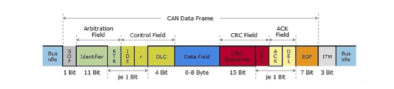
Bus-Idle:
Ruhephase des SystemsSOF:
Start of FrameIdentifier:
ID der Botschaft für ArbitrierungRTR:
remote transmission request
kennzeichnet ob das Frame Daten enthält oder zum senden von Daten auffordertIDE:
Identifier extension
Standardtelegramm lowDLC:
Data length Control
Längeninformationen über das DatenfeldData field:
enthält die NutzdatenCRC-Checksum:
CRC ChecksummeDEL:
CRC delimiterACK:
Alle Teilnehmer welche die Botschaft korrekt empfangen haben quittieren durch senden dominanten Pegel
Sender sendet rezessiven Pegel und erwartet überschrieben zu werdenDEL:
ACK delimiterEOF:
kennzeichnet End of Frame
Bewusste Codierungs-Verletzung durch senden von mehr als 5 rezessive BitsITM: Intermission, trennt Botschaften ab
Ablauf Datensenden und Datenempfang#
Datenübertragung erfolgt mittels Nachrichtenrahmen CAN Data Frames
Nutzdaten bis acht Byte können in einem Frame übertragen werden
Jeder Data Frame steht jedem Knoten zur Übernahme zur Verfügung
Jeder Data Frame hat einen Identifier (ID), welcher die Nachricht kennzeichnet
Busarbitrierung#
CSMA/CA
verhindert Kollisionen
Identifier der CAN Botschaft zur Arbitrierung bitweise vom MSB zum LSB (Big-Endian)
CAN Botschaft mit der niedrigsten ID wird gewinnt und wird übertragen
Knoten welche die Arbitrierung verlieren gehen in Empfangsmodus und Warten bis Bus wieder frei
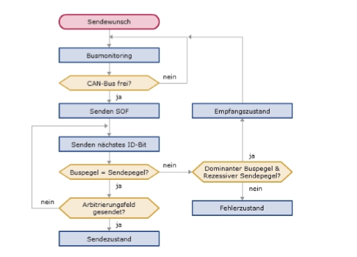
Physikalische und Strukturelle Fehlererkennungsmaßnahmen#
Bit-Stuffing#
Bei Asynchroner Datenübertragung werden die Flanken zum synchronisieren des Datagramms verwendet.
Wenn allerdings länger der selbe Pegel bleibt,
kann dies zu Problemen bei der Auslesung führen.
Um dies zu verhindern,
überträgt man ein Stuffing Bit,
welches für eine Flanke sorgt.
Da beide Teilnehmer das Stuffing erwarten gibt es keine Probleme bei der Dekodierung
OSI-ISO-Modell für Schnittstellen#
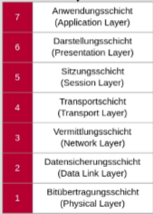
Merksatz: “Please do not throw salami pizzas away!”
Als für einen Feldbus müssen mindestens 3 Schichten vorhanden sein:
Application Layer
Zugriff auf das Kommunikationssystem (Software Library)Data Link Layer
Datagramm Aufbau, Fehlererkennung, BuszugriffPhysical Layer
Wie werden die Bit übertragen
Optional:
Network Layer
Übertragungsweg über Busknoten
Regelungstechnik#
Show code cell source
def create_block(text:str='',*, wpadding=1.5):
return elm.Ic(
pins=[
elm.IcPin(side='L', anchorname='in1'),
elm.IcPin(side='R', anchorname='out')
], edgepadW=wpadding
).label(text, 'center').anchor('in1').drop('out')
def create_sumation(in1='+', in2='-'):
return (dsp
.Circle()
.drop('E')
.label(in1, loc='W', ofst=(0, 0.3))
.label(in2, loc='S', ofst=(.3, 0)))
#display(create_block('$IT1$-Element'))
Regelkreis#
Standardregelkreis#
Show code cell source
with schemdraw.Drawing() as d:
d += elm.Line(arrow='->').idot(open=True)
d += (c := create_sumation())
d += elm.Line(arrow='->').length(1)
d += dsp.Box().label('Regler')
d += elm.Line(arrow='->').length(1)
d += dsp.Box().label('Stellglied')
d += elm.Line(arrow='->').length(1)
d += dsp.Box().label('Regelstrecke')
d += elm.Line().length(1).dot()
d.push()
d += elm.Line(arrow='->').label('$X_a(s)$', 'R')
d.pop()
d += elm.Line().down().length(3)
d += elm.Line(arrow='->').left().length(1)
d += dsp.Box().left().reverse().label('Messglied').drop('W')
d += elm.Wire('-|', arrow='->').to(c.S)
Blockschaltbild#
Das Blockschaltbild ist die Darstellung einer Regelung in Funktionsblöcken.
Darstellung ohne Räumliche Zuordnung. Mehrere Blöcke oft durch einzelnes wirkliches Element
Bestimmung Sprungantwort#
Übertragungsfunktion ist \(G(s) = \frac{U_a(s)}{U_e(s)}\)
Bei Sprungantwort \(U_e = \frac{1}{s}\)
Einsetzen und auf \(U_a(s)\) umformen,
wenn möglich vereinfachen
und mit Laplace Tabelle zurück transformieren.
Ü-Funktion zwischen Ausgängen und Eingängen von Regelkreisen#
Ein Pfeil bedeutet Multiplikation, die Werte sind dabei die Werte in den Boxen
Ein Kreis (oft mit Vorzeichen) bezeichnet eine Addition/Subtraktion
Es gelten die selben Arithmetischen Regeln wie Regulär in Mathe.
Die Übertragungsfunktion gibt immer \(\frac{U_a(s)}{U_e(s)}\) an.
Beschreibung im Zeit- und Frequenzbereich#
Im Frequenzbereich/Bildbereich beschreibt das Bode Diagramm (Amplitudengang & Phasengang).
Im Zeitbereich beschreibt die Sprungantwort das Element.
Rückwirkungsfreiheit#
Damit zwei Boxen wirklich multipliziert werden können, müssen diese Rückwirkungsfrei sein, sprich die zweite Box darf die erste nicht Beeinflussen. Ansonsten müssen diese Aufwendig, über die Schaltungen, aneinander geschaltet werden.
Die Rückwirkungsfreiheit wird über OPVs erreicht, welche die Schaltungen entkoppeln
Zwei RC-TPs
\(G(s)\) wäre \(\frac{1}{1+sR_1C_1}\cdot\frac{1}{1+sR_2C_2}\)
Kann nicht sein
Blöcke können als Eingang und Ausgang modelliert werden
für Rückwirkungsfreiheit
\(r_a << r_e\)
(Strenggenommen: \(|z_a| < |z_e|\) )
Bedeutung: Der Ausgangswiderstand muss im Verhältnis zum Eingangswiderstand vernachlässigbar sein
für zwei TPs würde das heißen:
\(z_a = R_1 || C_1\)
\(z_e = R_2 || C_2\)
meist einfacher mit OPVs
Übertragungsfunktion#
Die Übertragungsfunktion stellt das Verhältnis von Ausgang zu Eingang dar \(\frac{U_a}{U_e}\)
Es gibt sowohl die Übertragungsfunktion für den Zeit und den Bildbereich,
wobei im meist die im Bildbereich relevant ist um die Amplitude und Phase im Verhältnis zur Eingangsfrequenz darzustellen.
\(\frac{U_a(s)}{U_e{s}} = G(s)\)
Die Übertragungsfunktion im Bildbereich kann auch für die Sprungantwort verwendet werden \(\left(U_e = \frac{1}{s}\right)\)
Laplace-Transformation#
Vorgehensweise bei Systemantwort (Sprungantwort)#
\(G(s) = \frac{U_a}{U_e} \Rightarrow U_a(s) = G(s) \cdot U_e \wedge U_e = \frac{1}{s} \Rightarrow U_a(s) = \frac{G(s)}{s} \)
\(\mathscr{L}^{-1}\left\{U_a(s)\right\} = \mathscr{L}^{-1}\left\{\frac{G(s)}{s}\right\}\) = …
Anwendung von AWT, EWT#
\(\lim_{s\rightarrow 0+} ~s \cdot F(s) = \lim_{t\rightarrow\infty}f(t)\)
\(\lim_{s\rightarrow\infty}~s \cdot F(s) = \lim_{s\rightarrow 0+} f(t)\)
Partialbruchzerlegung für \(\mathscr{L}^{-1}\)#
Geogebra Befehl:
PartialFractions(\(Function\))
macht die Zerlegung automatisch,
dies wird verwendet um Komplexe Brüche mit Polynomen auf einfachere Brüche aufzuteilen.
Welche dann - im Idealfall - in der Transformations-Tabelle vorhanden sind.
Inverse Laplace-Transformation mittels Transformations-Tabelle#
Man nimmt die jeweilige Form der Funktion im Zeit/Bildbereich
Man bringt die Funktion in eine Form, welche in der Tabelle gegeben ist !! Form muss vorhanden sein Partial-Bruch bei Polynombrüchen
Man suche die Werte für die variablen Konstanten in der Funktionen (e.g. \(a\))
Man nehme die Funktion auf der anderen Seite und setze die Werte wieder ein
Enjoy
RT-Modelle der OPV-Grundschaltung#
Inv. und nicht inv OPV-Verstärker#
Show code cell source
with schemdraw.Drawing() as d:
d += elm.ResistorIEC().dot().idot(open=True).label('${R_1}$')
tmp = d.here
d += elm.Line().length(1)
d += (amp := elm.Opamp().anchor('in1'))
d += elm.Line().length(1).dot()
d.push()
d += elm.Line().dot(open=True).length(1)
d.pop()
d += elm.Line().up()
d += elm.ResistorIEC().left().label('${R_2}$')
d += elm.Wire('-|').to(tmp)
d += elm.Line().length(1).left().at(amp.in2)
d += elm.Ground()
with schemdraw.Drawing() as d:
d += elm.Line().idot(open=True)
d += (amp := elm.Opamp().anchor('in2').drop('out').flip())
d += elm.Line().length(1).dot()
d.push()
d += elm.Line().length(1).dot(open=True)
d.pop()
d += elm.ResistorIEC().down().dot().label('$R_1$')
d.push()
d += elm.Line().left().length(5)
d += elm.Wire('|-').to(amp.in1)
d.pop()
d += elm.ResistorIEC().down().label('$R_2$')
d += elm.Ground()
\(U_a = U_e\cdot \left(1 + \frac{R_2}{R_1}\right)\)
Bestimmung der OPV-Verstärkung#
Show code cell source
with schemdraw.Drawing() as d:
d += elm.ResistorIEC().dot().idot(open=True).label('${Z_1}$')
tmp = d.here
d += elm.Line().length(1)
d += (amp := elm.Opamp().anchor('in1'))
d += elm.Line().length(1).dot()
d.push()
d += elm.Line().dot(open=True).length(1)
d.pop()
d += elm.Line().up()
d += elm.ResistorIEC().left().label('${Z_2}$')
d += elm.Wire('-|').to(tmp)
d += elm.Line().length(1).left().at(amp.in2)
d += elm.Ground()
\(U_a = U_e\cdot -\frac{Z_2}{Z_1}\)
Auswirkung auf die Regelabweichung#
Zusammengesetzte Frequenzgänge#
Knickzug vom Amplituden- und Phasengang#
Bei der Knickkreisfrequenz \(\omega_g\) ist bei den meisten Elementen ein Umschwung der Verstärkerfunktion, bspw. von \(0dB/dek\) auf \(-20dB/dek\) bei einem PT1-Element
Zerlegung von Übertragungsfunktionen in Grundglieder#
Um Übertragungsfunktion muss in einzelne Elemente zu zerlegen muss es zu einer Reihe an Multiplikationen von \(T_1\cdot s\), \(\frac{1}{T_1\cdot s}\), \(\frac{k}{1+T_1\cdot s}\), \(k\cdot(1 + T_1\cdot s)\) zerlegt werden.
Rekonstruktion von \(G(s)\) aus Amplitudenverlauf#
Zum Rekonstruieren müssen bei einer Änderung jeweilige Elemente (je nach Veränderung; meist PT1 oder PD) dazugeschaltet werden, bei den zusätzlichen Elementen muss die Verstärkung dimensioniert werden (bei allen außer dem ersten meist \(1\)), und die Kreisfrequenz des Knicks dimensioniert werden. Am Anfang muss das jeweilige Element ausgewählt werden welches die Funktion vor jedem Knick gut beschreibt
Um auf die gesamt OPV-Schaltung zu kommen müssen die OPV-Schaltungen der einzelnen Elemente aneinander gehängt werden (Vorzeichen beachten)
Grundglieder#
I#
Übertragungsfunktion#
\(G(s) = \frac{1}{s}\)
Sprungantwort#
\(U_a(s) = \frac{1}{s} \cdot U_e = \frac{1}{s}\cdot \frac{1}{s} = \frac{1}{s^2}\)
\(u_a(t) = t\)
Bode-Diagramm#
\(G(i\omega) = \frac{1}{T_1\cdot i\omega}\)
Amplitudengang#
\(|G(s)| = \frac{1}{\omega}\)
\(log|G(s)| = - 20\cdot log(s)\)
Phasengang#
\(arg(G(s)) = 0 - \frac{\pi}{2} = 0- 90°\)
Show code cell source
fig, (amp, phase) = plt.subplots(2, 1)
fig.tight_layout(pad=5.0)
t = np.logspace(-3, +3, num=20, base=10)
amp.plot(t, -20*np.log10(t))
amp.set_xscale('log')
amp.set_xlim(1e-3, 1e+3)
amp.set_title('Amplitudengang')
phase.plot(t, np.fromiter((-90 for _ in t), t.dtype))
phase.set_xscale('log')
phase.set_xlim(1e-3, 1e+3)
phase.set_title('Phasengang')
phase.set_ylim(-180, 180)
phase.set_yticks([180, 90, 0, -90, -180])
;
''
OPV-Schaltung#
Show code cell source
with schemdraw.Drawing() as d:
d += elm.ResistorIEC().dot().idot(open=True).label('R').label('$U_e$', 'L')
tmp = d.here
d += elm.Line().length(1)
d += (amp := elm.Opamp().anchor('in1').drop('out'))
d += elm.Line().right().length(1).dot()
d.push()
d += elm.Line().up().length(2)
d += elm.Capacitor().left().label('C')
d += elm.Wire('-|').to(tmp)
d.pop()
d += elm.Line().length(2).dot(open=True).label('$U_a$', 'R')
d += elm.Line().left().length(1).at(amp.in2)
d += elm.Ground()
P#
Übertragungsfunktion#
\(G(s) = k\)
Sprungantwort#
\(U_a(s) = k\cdot\frac{1}{s}\)
\(u_a(t) = k\cdot \sigma(t)\)
Bodediagramm#
\(G(i\omega) = k\)
Amplitudengang#
\(|G(s)| = k\)
\(log|G(s)| = - 20\cdot log(k)\)
Phasengang#
\(arg(G(s)) = 0\)
Show code cell source
fig, (amp, phase) = plt.subplots(2, 1)
fig.tight_layout(pad=5.0)
t = np.logspace(-3, +3, num=20, base=10)
amp.plot(t, np.fromiter((20*np.log10(10) for _ in t), dtype=t.dtype))
amp.set_xscale('log')
amp.set_xlim(1e-3, 1e+3)
amp.set_ylim(-0.1, 30)
amp.set_title('Amplitudengang, k=10')
phase.plot(t, np.fromiter((0 for _ in t), t.dtype))
phase.set_xscale('log')
phase.set_xlim(1e-3, 1e+3)
phase.set_title('Phasengang')
phase.set_ylim(-180, 180)
phase.set_yticks([180, 90, 0, -90, -180])
[<matplotlib.axis.YTick at 0x1f3c2811690>,
<matplotlib.axis.YTick at 0x1f3c25d3550>,
<matplotlib.axis.YTick at 0x1f3c4433050>,
<matplotlib.axis.YTick at 0x1f3c28dd810>,
<matplotlib.axis.YTick at 0x1f3c28c5d90>]
OPV-Schaltung#
Show code cell source
with schemdraw.Drawing() as d:
d += elm.ResistorIEC().dot().idot(open=True).label('$R_1$').label('$U_e$', 'L')
tmp = d.here
d += elm.Line().length(1)
d += (amp := elm.Opamp().anchor('in1').drop('out'))
d += elm.Line().right().length(1).dot()
d.push()
d += elm.Line().up().length(2)
d += elm.ResistorIEC().left().label('$R_2$')
d += elm.Wire('-|').to(tmp)
d.pop()
d += elm.Line().length(2).dot(open=True).label('$U_a$', 'R')
d += elm.Line().left().length(1).at(amp.in2)
d += elm.Ground()
D#
Übertragungsfunktion#
\(G(s) = T_1\cdot s\)
Sprungantwort#
\(U_a(s) = T_1\cdot s\cdot\frac{1}{s}\)
\(u_a(t) = k\cdot \delta(t)\)
Bodediagramm#
\(G(i\omega) = T_1 \cdot i\omega\)
Amplitudengang#
\(|G(s)| = T_1\cdot\omega\)
\(log|G(s)| = - 20\cdot log(T_1\cdot\omega)\)
Phasengang#
\(arg(G(s)) = 90°\)
Show code cell source
fig, (amp, phase) = plt.subplots(2, 1)
fig.tight_layout(pad=5.0)
t = np.logspace(-3, +3, num=20, base=10)
amp.plot(t, 20*np.log10(t))
amp.set_xscale('log')
amp.set_xlim(1e-3, 1e+3)
amp.set_title('Amplitudengang, k=10')
phase.plot(t, np.fromiter((90 for _ in t), t.dtype))
phase.set_xscale('log')
phase.set_xlim(1e-3, 1e+3)
phase.set_title('Phasengang')
phase.set_ylim(-180, 180)
phase.set_yticks([180, 90, 0, -90, -180])
[<matplotlib.axis.YTick at 0x1f3c3c41c50>,
<matplotlib.axis.YTick at 0x1f3c3900450>,
<matplotlib.axis.YTick at 0x1f3c38e4790>,
<matplotlib.axis.YTick at 0x1f3c38b1f50>,
<matplotlib.axis.YTick at 0x1f3c2cec9d0>]
OPV-Schaltung#
Show code cell source
with schemdraw.Drawing() as d:
d += elm.Capacitor().dot().idot(open=True).label('$C$').label('$U_e$', 'L')
tmp = d.here
d += elm.Line().length(1)
d += (amp := elm.Opamp().anchor('in1').drop('out'))
d += elm.Line().right().length(1).dot()
d.push()
d += elm.Line().up().length(2)
d += elm.ResistorIEC().left().label('$R_2$')
d += elm.Wire('-|').to(tmp)
d.pop()
d += elm.Line().length(2).dot(open=True).label('$U_a$', 'R')
d += elm.Line().left().length(1).at(amp.in2)
d += elm.Ground()
PT1, PI, PD, DT1 Zusammen#
PT1 |
PD |
PI |
DT1 |
|
|---|---|---|---|---|
\(G(s)\) |
\(k\cdot\frac{1}{1 + T_1\cdot s}\) |
\(k\cdot(1 + T_1\cdot s)\) |
\(k\cdot\frac{T_1\cdot s + 1}{T_1 \cdot s}\) |
\(k\cdot\frac{T_1\cdot s}{1+T_1\cdot s}\) |
\(|G(i\omega)|\) |
\(|k|\cdot\frac{1}{\sqrt{1 + T_1^2\cdot\omega^2}}\) |
\(k\cdot\sqrt{1 + T_1^2\cdot \omega^2}\) |
\(|k|\cdot\frac{\sqrt{1 + T_1^2\omega^2}}{T_1\cdot \omega}\) |
\(|k|\cdot\frac{T_1\cdot\omega}{\sqrt{1 + T_1^2\omega^2}}\) |
\(arg(G(i\omega)|\) |
\(0 - arctan(T_1\omega)\) |
\(arctan(T_1\cdot\omega)\) |
\(arctan(T_1\cdot\omega)-90°\) |
\(90°-arctan(T_1\cdot\omega)\) |
Amplitudengang für Name#
Beim Verbinden von zwei Punkten durch den Mittelpunkt, ergibt sich der Amplitudengang für das Regelelement für die dazugehörigen Buchstaben, von dieser Form kann \(G(s)\) hergeleitet werden und von dieser der Rest
Show code cell source
fig, ax = plt.subplots()
ax.text(-3.3, 3, 'P')
ax.text(-3.3, 0, 'P')
ax.text(-3.3, -3, 'D')
ax.text(3.1, 3, 'D')
ax.text(3.1, 0, '$T_1~$/I')
ax.text(3.1, -3, '$T_1$')
ax.text(0, 0, 'Midpoint')
ax.scatter([-3,-3,-3, 0, 3, 3, 3], [3, 0, -3, 0, 3, 0, -3])
ax.set_xlim(-4, 4)
ax.set_ylim(-3.5, 3.5)
(-3.5, 3.5)
Sprungantwort#
Man nimmt \(G(s)\), \(G(s) = \frac{U_a(s)}{U_e(s)}\), wenn dies nun auf \(U_a(s)\) Umgeformt wird so ergibt sich \(U_a(s) = G(s)\cdot U_e(s)\).
Um die Sprungantwort zu berechnen wir in das Regelglied \(U_e(s) = \frac{1}{s}\) geschickt. Dadurch ergibt sich: \(U_a(s) = G(s)\cdot\frac{1}{s}\). Hier muss man nun für \(G(s)\), für das entsprechende Regelelement einsetzen und anschließend Rücktransformieren.
OPV-Schaltung#
Die Form des Amplitudenganges über den unteren Graphen legen und die nächste Vertikale Linie nehmen, Wenn diese näher an Seriell ist so sind Kapazität und Widerstand in Serie geschaltet, bei Parallel, Parallel. Wenn der Linie zu Output geht so ist die Verschaltung von Widerstand und Kapazität am Ausgangspfad und wenn näher bei Input beim Eingang.
Show code cell source
fig, ax = plt.subplots()
ax.plot([-1, -2], [0, 3], color="dodgerblue")
ax.plot([-1, -2], [0, -3], color="dodgerblue")
ax.plot([-2, 1], [3, 3], color="dodgerblue")
ax.plot([-2, 1], [-3, -3], color="dodgerblue")
ax.plot([-1, 2], [0, 0], color="dodgerblue")
ax.plot([1, 2], [3, 0], color="dodgerblue")
ax.plot([1, 2], [-3, 0], color="dodgerblue")
ax.text(0, 2, 'Output')
ax.text(0, -2, 'Input')
ax.text(-2, 0, 'Seriell')
ax.text(2.2, 0, 'Parallel')
ax.set_yticks([])
ax.set_xticks([])
ax.axis('off')
(-2.2, 2.2, -3.3, 3.3)
IT1#
Zusammengesetzt aus einem I- und einem PT1-Regler.
Amplitudengänge addieren sich im logarithmischen Bereich. Und Phasengänge Addieren sich.
\(G(s) = \frac{k}{T_I\cdot s\cdot(1 + T_1\cdot s)}\) …
Show code cell source
with schemdraw.Drawing() as d:
d += elm.Dot(open=True)
d += create_block('I-Element')
d += create_block('PT1-Element')
d += elm.Dot(open=True)
Show code cell source
with schemdraw.Drawing() as d:
d += elm.ResistorIEC().dot().idot(open=True).label('$R_1$').label('$U_e$', 'L')
tmp = d.here
d += elm.Line().length(1)
d += (amp1 := elm.Opamp().anchor('in1').drop('out'))
d += elm.Line().right().length(1).dot()
d.push()
d += elm.Line().up().length(2)
d += (r2 := elm.Capacitor().left().label('$C$'))
d += elm.Wire('-|').to(tmp)
d.pop()
d += elm.Line().length(2).dot(open=True)
d.push()
d += elm.Line().left().length(1).at(amp1.in2)
d += elm.Ground()
d.pop()
d += elm.ResistorIEC().dot().idot(open=True).label('$R_2$')
tmp = d.here
d += elm.Line().length(1)
d += (amp2 := elm.Opamp().anchor('in1').drop('out'))
d += elm.Line().right().length(1).dot()
d.push()
d += elm.Line().up().length(2)
d.push()
d += elm.Capacitor().left().label('$C$')
d += elm.Wire('-|').to(tmp)
d.pop()
d += elm.Line().up().length(2)
d += elm.ResistorIEC().left().label('$R_3$')
d += elm.Wire('-|').to(tmp)
d.pop()
d += elm.Line().length(2).dot(open=True).label('$U_a$', 'R')
d.push()
d += elm.Line().left().length(1).at(amp2.in2)
d += elm.Ground()
PDT1#
Das PDT1-Element setzt sich aus 1xPT1 und 1xPD -Element zusammen
\(G(s) = \frac{\left(1+sT_1\right)}{\left(1+sT_1\right)}\)
\(|G(j\omega)| = \frac{\sqrt{1+\omega^2T_1^2}}{\sqrt{1 + \omega^2T_2^2}}\)
\(arg(j\omega) = atan(\omega T_1) - atan(\omega T_2)\)
Show code cell source
T_1 = 1/1
T_2 = 1/10
aG = lambda w: np.sqrt(1 + w**2 * T_1**2)/ np.sqrt(1 + w**2 * T_2**2)
pG = lambda w: np.arctan(w*T_1) - np.arctan(w*T_2)
w = np.logspace(-3, 3, 30)
fig, (amp, ph) = plt.subplots(2, 1)
amp.plot(w, 20*np.log10(aG(w)))
amp.set_xscale('log')
ph.plot(w, pG(w))
ph.set_xscale('log')
ph.set_yticks([np.pi/2, 0])
[<matplotlib.axis.YTick at 0x1f3c47267d0>,
<matplotlib.axis.YTick at 0x1f3c26028d0>]
OPV-Schaltung ist ein inv Verstärker mit \(R||C\) für \(Z_1\) und \(Z_2\)
Sprungantwort#
\(U_a(s) = \frac{1 + sT_1}{1 + sT_2} \cdot \frac{1}{s}\)
\(= \frac{1 + sT_1}{s + s^2T_2} \)
mit Tabelle: \(u_a(t) = 1- \left(1-\frac{T_1}{T_2}\right)\cdot e^{-\frac{t}{T_2}}\)
Show code cell source
T_1 = 1/1
T_2 = 1/10
fig, ax = plt.subplots()
t = np.arange(0, 12, 0.1)
ua = lambda t: 1 - (1-T_1/T_2) * np.e**(-t/T_2)
ax.plot(t, ua(t))
ax.set_yticks([0,1,2,4,5,6,8, 10])
[<matplotlib.axis.YTick at 0x1f3c4740ad0>,
<matplotlib.axis.YTick at 0x1f3c63fd210>,
<matplotlib.axis.YTick at 0x1f3c62bc110>,
<matplotlib.axis.YTick at 0x1f3c63a9490>,
<matplotlib.axis.YTick at 0x1f3c636de90>,
<matplotlib.axis.YTick at 0x1f3c639dbd0>,
<matplotlib.axis.YTick at 0x1f3c641afd0>,
<matplotlib.axis.YTick at 0x1f3c641a290>]
Startwert ist \(k\cdot\frac{T_1}{T_2}\)
Endwert ist \(k\)
OPV-Schaltung aus Blockdiagramm#
Zum Rekonstruieren müssen bei einer Änderung jeweilige Elemente (je nach Veränderung; meist PT1 oder PD) dazugeschaltet werden, bei den zusätzlichen Elementen muss die Verstärkung dimensioniert werden (bei allen außer dem ersten meist \(1\)), und die Kreisfrequenz des Knicks dimensioniert werden. Am Anfang muss das jeweilige Element ausgewählt werden welches die Funktion vor jedem Knick gut beschreibt
Um auf die gesamt OPV-Schaltung zu kommen müssen die OPV-Schaltungen der einzelnen Elemente aneinander gehängt werden (Vorzeichen beachten), Die OPV Schaltungen sind alle Modifikationen des Invertierenden Verstärkers, bei dem ein Widerstand mit einer Kapazität und Widerstand ausgetauscht, je nach Element können diese in Serie oder Parallel liegen. Für die Verschaltung siehe oben OPV-Schaltung
OPV-Schaltung für Summen- und Differenzknoten#
Summierknoten werden über OPV-Summierer/Subtrahierer realisiert
In den Schaltungen gilt:
Ausgang: \(U_a\)
Eingänge je nach Vorzeichen Evtl. Vorzeichen durch Invertierer anpassen
OPV Subtrahierer#
\(U_a = U_{e1} - U_{e2}\)
Show code cell source
with schemdraw.Drawing() as d:
d += elm.ResistorIEC().dot().idot(open=True).label('$R$').label('$U_{e1}$', 'L')
tmp = d.here
d += elm.Line().length(1)
d += (amp := elm.Opamp().anchor('in1').drop('out'))
d += elm.Line().right().length(1).dot()
d.push()
d += elm.Line().up().length(2)
d += elm.ResistorIEC().left().label('$R$')
d += elm.Wire('-|').to(tmp)
d.pop()
d += elm.Line().length(2).dot(open=True).label('$U_a$', 'R')
d += elm.Line().left().length(1).at(amp.in2).dot()
d.push()
d += elm.ResistorIEC().down().label('$R$')
d += elm.Ground()
d.pop()
d += elm.ResistorIEC().left().label('$R$').dot(open=True).label('$U_{e2}$', 'L')
inv OPV Summierer#
\(U_a = -(U_{e1} + U_{e2})\)
für N-Eingänge gilt: \(U_a = - \Sigma_{i=0}^{N}~U_{ei}\)
Show code cell source
with schemdraw.Drawing() as d:
d += elm.ResistorIEC().dot().idot(open=True).label('$R$').label('$U_{e1}$', 'L')
tmp = d.here
d += elm.Line().length(1)
d += (amp := elm.Opamp().anchor('in1').drop('out'))
d += elm.Line().right().length(1).dot()
d.push()
d += elm.Line().up().length(2)
d += elm.ResistorIEC().left().label('$R$')
d += elm.Line().left().length(1.15).dot()
d.push()
d += elm.ResistorIEC().left().dot(open=True).label('$U_{e2}$', 'L').label('$R$')
d.pop()
d += elm.Wire('-|').to(tmp)
d.pop()
d += elm.Line().length(2).dot(open=True).label('$U_a$', 'R')
d += elm.Line().left().length(1).at(amp.in2)
d += elm.Ground()
PT \(_2\) Element#
Zusammen aus 1x IT1-Element in mit Rückkopplung (Schwingungsfähig)
Zwei PT1-Element (nicht Schwingungsfähig)
Beschreibung im Frequenz- und Zeitbereich#
\(G(s) = \frac{1}{1 + \frac{2D}{\omega_n} + s^2\frac{1}{\omega_n^2}}\)
Kenngrößen#
Überschwingen: Amplitude der ersten Schwingung, wie hoch kommt das Signal überhaupt? \(ü = \)
Verstärkung: Auf welchen Wert schwingt sich das Signal ein durch die Eingangsspannung
\(\Tau\): Exponentialkurve über die Amplituden legen, wann erreicht diese Kurve \(63%\) des Eingeschwungenen Zustandes (\(e^{-1}~\%\) vom Eingeschwungenen Zustand weg)
T: Periodendauer der Schwingung, mehrere Perioden messen und herunter zuteilen
\(T_ü\): Zeit bis zum Überschwingungsmaxima (keine ganze Periode bei starker Dämpfung) \(T_ü = \frac{T_0}{2}\)
Überschwingen#
Wenn sich das Signal auf \(1V\) einschwingt und bei der ersten Schwingung auf \(1.5V\) raufkommt, so ist \(ü=\frac{u_{max}}{k\cdot U_e}\)
Überschwingen ist manchmal gewollt muss jedoch auf die Situation angemessen dimensioniert werden.
Schwingunsmaxima#
Alternative Formel für \(ü\)
\(ü = e^{-\frac{\pi\cdot D}{\sqrt{1-D^2}}}\)
Identifikation im Zeitbereich#
Bedeutung für die Regelungstechnik#
Wichtigste
Schwingungsfähig
Alles in Richtung PT2
Gut Beschrieben
Viele Faustregeln
Nyquist Kriteritum#
Stabilitätsgrenzen#
Wenn die Kurve über die die Frequenz auf der Realen und Imaginären Achse gezeichnet wird, so muss die Kurve kleiner 1 sein wenn die Kurve die x-Achse auf der negativen Seite schneidet.
Show code cell source
fix, ax = plt.subplots()
w = np.arange(0.0, 100.0, .01)
stable_vs = -.8/((1+1j*w)**(3))
unstable_vs = -1.2/(1+1j*w)
ax.plot(np.real(stable_vs), np.imag(stable_vs), label="stable")
ax.plot(np.real(unstable_vs), np.imag(unstable_vs), label='unstable')
ax.grid(which='both')
ax.legend()
ax.scatter([-1], [0])
ax.text(-1, .01, 'Nyquist Punkt')
;
''
Offener und geschlossener Regelkreis#
Für die Anwendung des Kriteritums braucht man - bei uns - den Offenen Regelkreis,
die Übertragungsfunktion ist dabei in der Form:
\(G(s) = \frac{F_O(s)}{1 + F_O(s)}\)
Show code cell source
with schemdraw.Drawing() as d:
d += elm.Line().idot(open=True).length(1.5)
d += (c := dsp.Circle().drop('E').label('+', loc='W', ofst=(0, 0.3)).label('-', loc='S', ofst=(.3, 0)))
d += create_block('$F_O(s)$')
d.push()
d += elm.Line().dot(open=True).idot().length(1.5)
d.pop()
d += elm.Line().down().length(2)
d += elm.Wire("-|").to(c.S)
Elemente welche nicht Teil der Rückkopplung sind werden bei der Stabilitätsprüfung nicht mitberücksichtigt!!
Phasenrand#
Bei einer Verstärkung von \(1\) wie weit ist man von den 180° (\(\pi\)) noch weg
\(|F_O(i\omega_D)| = 1\)
\(\alpha_R = arg(F_O(i\omega_D))\)
Amplitudenrand#
Bei einer Phasendrehung von \(\pi\), welche Abstand hat man zur Verstärkung von \(1\)
\(arg(F_O(i\omega_r)) = \pi\)
\(A_R = \frac{1}{|F_O(i\omega_r)|}\)
Faustregeln (Kommt nicht)#
Wenn man \(30%\) Überschwingen Einstellen will braucht man einen Phasenrand von ca \(40°\)